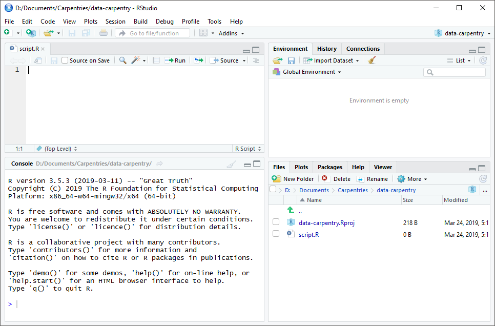
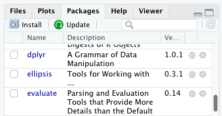

Content from Using Markdown
Last updated on 2023-12-20 | Edit this page
Estimated time: 12 minutes
Overview
Questions
- How do you write a lesson using Markdown and sandpaper?
Objectives
- Explain how to use markdown with The Carpentries Workbench
- Demonstrate how to include pieces of code, figures, and nested challenge blocks
Introduction
This is a lesson created via The Carpentries Workbench. It is written in Pandoc-flavored Markdown for static files and R Markdown for dynamic files that can render code into output. Please refer to the Introduction to The Carpentries Workbench for full documentation.
What you need to know is that there are three sections required for a valid Carpentries lesson:
-
questionsare displayed at the beginning of the episode to prime the learner for the content. -
objectivesare the learning objectives for an episode displayed with the questions. -
keypointsare displayed at the end of the episode to reinforce the objectives.
Inline instructor notes can help inform instructors of timing challenges associated with the lessons. They appear in the “Instructor View”
OUTPUT
[1] "This new lesson looks good"You can add a line with at least three colons and a
solution tag.
Figures
You can use standard markdown for static figures with the following syntax:
{alt='alt text for accessibility purposes'}
Math
One of our episodes contains \(\LaTeX\) equations when describing how to create dynamic reports with {knitr}, so we now use mathjax to describe this:
$\alpha = \dfrac{1}{(1 - \beta)^2}$ becomes: \(\alpha = \dfrac{1}{(1 - \beta)^2}\)
Cool, right?
Content from next-episode-test
Last updated on 2023-12-20 | Edit this page
Estimated time: 12 minutes
Overview
Questions
- How do you write a lesson using R Markdown and sandpaper?
Objectives
- Explain how to use markdown with the new lesson template
- Demonstrate how to include pieces of code, figures, and nested challenge blocks
Introduction
This is a lesson created via The Carpentries Workbench. It is written
in Pandoc-flavored Markdown
for static files (with extension .md) and R Markdown for dynamic files
that can render code into output (with extension .Rmd).
Please refer to the Introduction to The
Carpentries Workbench for full documentation.
What you need to know is that there are three sections required for a valid Carpentries lesson template:
-
questionsare displayed at the beginning of the episode to prime the learner for the content. -
objectivesare the learning objectives for an episode displayed with the questions. -
keypointsare displayed at the end of the episode to reinforce the objectives.
Inline instructor notes can help inform instructors of timing challenges associated with the lessons. They appear in the “Instructor View”
OUTPUT
[1] "This new lesson looks good"You can add a line with at least three colons and a
solution tag.
Figures
You can include figures generated from R Markdown:
R
pie(
c(Sky = 78, "Sunny side of pyramid" = 17, "Shady side of pyramid" = 5),
init.angle = 315,
col = c("deepskyblue", "yellow", "yellow3"),
border = FALSE
)

Or you can use pandoc markdown for static figures with the following syntax:
{alt='alt text for accessibility purposes'}
Math
One of our episodes contains \(\LaTeX\) equations when describing how to create dynamic reports with {knitr}, so we now use mathjax to describe this:
$\alpha = \dfrac{1}{(1 - \beta)^2}$ becomes: \(\alpha = \dfrac{1}{(1 - \beta)^2}\)
Cool, right?
Content from Before we Start
Last updated on 2023-12-20 | Edit this page
Estimated time: 15 minutes
- “How to find your way around RStudio?”
- “How to interact with R?”
- “How to manage your environment?”
- “How to install packages?”
questions:
objectives: - “Install latest version of R.” - “Install latest
version of RStudio.” - “Navigate the RStudio GUI.” - “Install additional
packages using the packages tab.” - “Install additional packages using R
code.” keypoints: - “Use RStudio to write and run R programs.” - “Use
install.packages() to install packages (libraries).”
source: Rmd
What is R? What is RStudio?
The term “R” is used to refer to both the programming
language and the software that interprets the scripts written using
it.
RStudio is currently a very popular way to not only write your R scripts but also to interact with the R software. To function correctly, RStudio needs R and therefore both need to be installed on your computer.
To make it easier to interact with R, we will use RStudio. RStudio is the most popular IDE (Integrated Development Environmemt) for R. An IDE is a piece of software that provides tools to make programming easier.
Why learn R?
R does not involve lots of pointing and clicking, and that’s a good thing
The learning curve might be steeper than with other software, but with R, the results of your analysis do not rely on remembering a succession of pointing and clicking, but instead on a series of written commands, and that’s a good thing! So, if you want to redo your analysis because you collected more data, you don’t have to remember which button you clicked in which order to obtain your results; you just have to run your script again.
Working with scripts makes the steps you used in your analysis clear, and the code you write can be inspected by someone else who can give you feedback and spot mistakes.
Working with scripts forces you to have a deeper understanding of what you are doing, and facilitates your learning and comprehension of the methods you use.
R code is great for reproducibility
Reproducibility is when someone else (including your future self) can obtain the same results from the same dataset when using the same analysis.
R integrates with other tools to generate manuscripts from your code. If you collect more data, or fix a mistake in your dataset, the figures and the statistical tests in your manuscript are updated automatically.
An increasing number of journals and funding agencies expect analyses to be reproducible, so knowing R will give you an edge with these requirements.
R is interdisciplinary and extensible
With 18,000+ packages that can be installed to extend its capabilities, R provides a framework that allows you to combine statistical approaches from many scientific disciplines to best suit the analytical framework you need to analyze your data. For instance, R has packages for image analysis, GIS, time series, population genetics, and a lot more.
R works on data of all shapes and sizes
The skills you learn with R scale easily with the size of your dataset. Whether your dataset has hundreds or millions of lines, it won’t make much difference to you.
R is designed for data analysis. It comes with special data structures and data types that make handling of missing data and statistical factors convenient.
R can connect to spreadsheets, databases, and many other data formats, on your computer or on the web.
R produces high-quality graphics
The plotting functionalities in R are endless, and allow you to adjust any aspect of your graph to convey most effectively the message from your data.
R has a large and welcoming community
Thousands of people use R daily. Many of them are willing to help you through mailing lists and websites such as Stack Overflow, or on the RStudio community. Questions which are backed up with short, reproducible code snippets are more likely to attract knowledgeable responses.
Not only is R free, but it is also open-source and cross-platform
Anyone can inspect the source code to see how R works. Because of this transparency, there is less chance for mistakes, and if you (or someone else) find some, you can report and fix bugs.
Because R is open source and is supported by a large community of developers and users, there is a very large selection of third-party add-on packages which are freely available to extend R’s native capabilities.
ERROR
Error in knitr::include_graphics("../fig/r-manual.jpeg"): Cannot find the file(s): "../fig/r-manual.jpeg"ERROR
Error in knitr::include_graphics("../fig/r-automatic.jpeg"): Cannot find the file(s): "../fig/r-automatic.jpeg"A tour of RStudio
Knowing your way around RStudio
Let’s start by learning about RStudio, which is an Integrated Development Environment (IDE) for working with R.
The RStudio IDE open-source product is free under the Affero General Public License (AGPL) v3. The RStudio IDE is also available with a commercial license and priority email support from RStudio, Inc.
We will use the RStudio IDE to write code, navigate the files on our computer, inspect the variables we create, and visualize the plots we generate. RStudio can also be used for other things (e.g., version control, developing packages, writing Shiny apps) that we will not cover during the workshop.
One of the advantages of using RStudio is that all the information you need to write code is available in a single window. Additionally, RStudio provides many shortcuts, autocompletion, and highlighting for the major file types you use while developing in R. RStudio makes typing easier and less error-prone.
Getting set up
It is good practice to keep a set of related data, analyses, and text self-contained in a single folder called the working directory. All of the scripts within this folder can then use relative paths to files. Relative paths indicate where inside the project a file is located (as opposed to absolute paths, which point to where a file is on a specific computer). Working this way makes it a lot easier to move your project around on your computer and share it with others without having to directly modify file paths in the individual scripts.
RStudio provides a helpful set of tools to do this through its “Projects” interface, which not only creates a working directory for you but also remembers its location (allowing you to quickly navigate to it). The interface also (optionally) preserves custom settings and open files to make it easier to resume work after a break.
Create a new project
- Under the
Filemenu, click onNew project, chooseNew directory, thenNew project - Enter a name for this new folder (or “directory”) and choose a
convenient location for it. This will be your working
directory for the rest of the day (e.g.,
~/data-carpentry) - Click on
Create project - Create a new file where we will type our scripts. Go to File >
New File > R script. Click the save icon on your toolbar and save
your script as “
script.R”.
The simplest way to open an RStudio project once it has been created
is to navigate through your files to where the project was saved and
double click on the .Rproj (blue cube) file. This will open
RStudio and start your R session in the same directory
as the .Rproj file. All your data, plots and scripts will
now be relative to the project directory. RStudio projects have the
added benefit of allowing you to open multiple projects at the same time
each open to its own project directory. This allows you to keep multiple
projects open without them interfering with each other.
The RStudio Interface
Let’s take a quick tour of RStudio.

RStudio is divided into four “panes”. The placement of these panes and their content can be customized (see menu, Tools -> Global Options -> Pane Layout).
The Default Layout is: - Top Left - Source: your scripts and documents - Bottom Left - Console: what R would look and be like without RStudio - Top Right - Enviornment/History: look here to see what you have done - Bottom Right - Files and more: see the contents of the project/working directory here, like your Script.R file
Organizing your working directory
Using a consistent folder structure across your projects will help keep things organized and make it easy to find/file things in the future. This can be especially helpful when you have multiple projects. In general, you might create directories (folders) for scripts, data, and documents. Here are some examples of suggested directories:
-
data/Use this folder to store your raw data and intermediate datasets. For the sake of transparency and provenance, you should always keep a copy of your raw data accessible and do as much of your data cleanup and preprocessing programmatically (i.e., with scripts, rather than manually) as possible. -
data_output/When you need to modify your raw data, it might be useful to store the modified versions of the datasets in a different folder. -
documents/Used for outlines, drafts, and other text. -
fig_output/This folder can store the graphics that are generated by your scripts. -
scripts/A place to keep your R scripts for different analyses or plotting.
You may want additional directories or subdirectories depending on your project needs, but these should form the backbone of your working directory.

The working directory
The working directory is an important concept to understand. It is the place where R will look for and save files. When you write code for your project, your scripts should refer to files in relation to the root of your working directory and only to files within this structure.
Using RStudio projects makes this easy and ensures that your working
directory is set up properly. If you need to check it, you can use
getwd(). If for some reason your working directory is not
the same as the location of your RStudio project, it is likely that you
opened an R script or RMarkdown file not your
.Rproj file. You should close out of RStudio and open the
.Rproj file by double clicking on the blue cube!
Downloading the data and getting set up
For this lesson we will use the following folders in our working
directory: data/,
data_output/ and
fig_output/. Let’s write them all in
lowercase to be consistent. We can create them using the RStudio
interface by clicking on the “New Folder” button in the file pane
(bottom right), or directly from R by typing at console:
R
dir.create("data")
dir.create("data_output")
dir.create("fig_output")
Begin by downloading the dataset called
“SAFI_clean.csv”. The direct download link is: https://raw.githubusercontent.com/KUBDatalab/beginning-R/main/data/SAFI_clean.csv.
Place this downloaded file in the data/ you just created.
You can do this directly from R by copying and pasting this in your
terminal (your instructor can place this chunk of code in the
Etherpad):
R
download.file("https://raw.githubusercontent.com/KUBDatalab/beginning-R/main/data/SAFI_clean.csv",
"data/SAFI_clean.csv", mode = "wb")
Interacting with R
The basis of programming is that we write down instructions for the computer to follow, and then we tell the computer to follow those instructions. We write, or code, instructions in R because it is a common language that both the computer and we can understand. We call the instructions commands and we tell the computer to follow the instructions by executing (also called running) those commands.
There are two main ways of interacting with R: by using the console or by using script files (plain text files that contain your code). The console pane (in RStudio, the bottom left panel) is the place where commands written in the R language can be typed and executed immediately by the computer. It is also where the results will be shown for commands that have been executed. You can type commands directly into the console and press Enter to execute those commands, but they will be forgotten when you close the session.
Because we want our code and workflow to be reproducible, it is better to type the commands we want in the script editor and save the script. This way, there is a complete record of what we did, and anyone (including our future selves!) can easily replicate the results on their computer.
RStudio allows you to execute commands directly from the script editor by using the Ctrl + Enter shortcut (on Mac, Cmd + Return will work). The command on the current line in the script (indicated by the cursor) or all of the commands in selected text will be sent to the console and executed when you press Ctrl + Enter. If there is information in the console you do not need anymore, you can clear it with Ctrl + L. You can find other keyboard shortcuts in this RStudio cheatsheet about the RStudio IDE.
At some point in your analysis, you may want to check the content of a variable or the structure of an object without necessarily keeping a record of it in your script. You can type these commands and execute them directly in the console. RStudio provides the Ctrl + 1 and Ctrl + 2 shortcuts allow you to jump between the script and the console panes.
If R is ready to accept commands, the R console shows a
> prompt. If R receives a command (by typing,
copy-pasting, or sent from the script editor using Ctrl +
Enter), R will try to execute it and, when ready, will show
the results and come back with a new > prompt to wait
for new commands.
If R is still waiting for you to enter more text, the console will
show a + prompt. It means that you haven’t finished
entering a complete command. This is likely because you have not
‘closed’ a parenthesis or quotation, i.e. you don’t have the same number
of left-parentheses as right-parentheses or the same number of opening
and closing quotation marks. When this happens, and you thought you
finished typing your command, click inside the console window and press
Esc; this will cancel the incomplete command and return you
to the > prompt. You can then proofread the command(s)
you entered and correct the error.
Installing additional packages using the packages tab
In addition to the core R installation, there are in excess of 18,000 additional packages which can be used to extend the functionality of R. Many of these have been written by R users and have been made available in central repositories, like the one hosted at CRAN, for anyone to download and install into their own R environment. You should have already installed the packages ‘ggplot2’ and ’dplyr. If you have not, please do so now using these instructions.
You can see if you have a package installed by looking in the
packages tab (on the lower-right by default). You can also
type the command installed.packages() into the console and
examine the output.

Additional packages can be installed from the ‘packages’ tab. On the packages tab, click the ‘Install’ icon and start typing the name of the package you want in the text box. As you type, packages matching your starting characters will be displayed in a drop-down list so that you can select them.

At the bottom of the Install Packages window is a check box to ‘Install’ dependencies. This is ticked by default, which is usually what you want. Packages can (and do) make use of functionality built into other packages, so for the functionality contained in the package you are installing to work properly, there may be other packages which have to be installed with them. The ‘Install dependencies’ option makes sure that this happens.
Exercise
Use both the Console and the Packages tab to confirm that you have the tidyverse installed.
Solution
Scroll through packages tab down to ‘tidyverse’. You can also type a few characters into the searchbox. The ‘tidyverse’ package is really a package of packages, including ‘ggplot2’ and ‘dplyr’, both of which require other packages to run correctly. All of these packages will be installed automatically. Depending on what packages have previously been installed in your R environment, the install of ‘tidyverse’ could be very quick or could take several minutes. As the install proceeds, messages relating to its progress will be written to the console. You will be able to see all of the packages which are actually being installed. {: .solution} {: .challenge}
Because the install process accesses the CRAN repository, you will need an Internet connection to install packages.
It is also possible to install packages from other repositories, as well as Github or the local file system, but we won’t be looking at these options in this lesson.
Installing additional packages using R code
If you were watching the console window when you started the install of ‘tidyverse’, you may have noticed that the line
R
install.packages("tidyverse")
was written to the console before the start of the installation messages.
You could also have installed the
tidyverse packages by running this command
directly at the R terminal.
{% include links.md %}
Content from Introduction to R
Last updated on 2023-12-20 | Edit this page
Estimated time: 40 minutes
Creating objects in R
You can get output from R simply by typing math in the console:
R
3 + 5
OUTPUT
[1] 8R
12 / 7
OUTPUT
[1] 1.714286However, to do useful and interesting things, we need to assign
values to objects. To create an object, we need to
give it a name followed by the assignment operator <-,
and the value we want to give it:
R
area_hectares <- 1.0
<- is the assignment operator. It assigns values on
the right to objects on the left. So, after executing
x <- 3, the value of x is 3.
The arrow can be read as 3 goes into x.
For historical reasons, you can also use = for assignments,
but not in every context. Because of the slight
differences
in syntax, it is good practice to always use <- for
assignments. More generally we prefer the <- syntax over
= because it makes it clear what direction the assignment
is operating (left assignment), and it increases the read-ability of the
code.
In RStudio, typing Alt + - (push Alt
at the same time as the - key) will write <-
in a single keystroke in a PC, while typing Option +
- (push Option at the same time as the
- key) does the same in a Mac.
Objects can be given any name such as x,
current_temperature, or subject_id. You want
your object names to be explicit and not too long. They cannot start
with a number (2x is not valid, but x2 is). R
is case sensitive (e.g., age is different from
Age). There are some names that cannot be used because they
are the names of fundamental objects in R (e.g., if,
else, for, see here
for a complete list). In general, even if it’s allowed, it’s best to not
use them (e.g., c, T, mean,
data, df, weights). If in doubt,
check the help to see if the name is already in use. It’s also best to
avoid dots (.) within an object name as in
my.dataset. There are many objects in R with dots in their
names for historical reasons, but because dots have a special meaning in
R (for methods) and other programming languages, it’s best to avoid
them. It is also recommended to use nouns for object names, and verbs
for function names. It’s important to be consistent in the styling of
your code (where you put spaces, how you name objects, etc.). Using a
consistent coding style makes your code clearer to read for your future
self and your collaborators. In R, three popular style guides are Google’s, Jean Fan’s and the tidyverse’s. The tidyverse’s is
very comprehensive and may seem overwhelming at first. You can install
the lintr
package to automatically check for issues in the styling of your
code.
Objects vs. variables
What are known as
objectsinRare known asvariablesin many other programming languages. Depending on the context,objectandvariablecan have drastically different meanings. However, in this lesson, the two words are used synonymously. For more information see: https://cran.r-project.org/doc/manuals/r-release/R-lang.html#Objects {: .callout}
When assigning a value to an object, R does not print anything. You can force R to print the value by using parentheses or by typing the object name:
R
area_hectares <- 1.0 # doesn't print anything
(area_hectares <- 1.0) # putting parenthesis around the call prints the value of `area_hectares`
OUTPUT
[1] 1R
area_hectares # and so does typing the name of the object
OUTPUT
[1] 1Now that R has area_hectares in memory, we can do
arithmetic with it. For instance, we may want to convert this area into
acres (area in acres is 2.47 times the area in hectares):
R
2.47 * area_hectares
OUTPUT
[1] 2.47We can also change an object’s value by assigning it a new one:
R
area_hectares <- 2.5
2.47 * area_hectares
OUTPUT
[1] 6.175This means that assigning a value to one object does not change the
values of other objects. For example, let’s store the plot’s area in
acres in a new object, area_acres:
R
area_acres <- 2.47 * area_hectares
and then change area_hectares to 50.
R
area_hectares <- 50
Exercise
What do you think is the current content of the object
area_acres? 123.5 or 6.175?Solution
The value of
area_acresis still 6.175 because you have not re-run the linearea_acres <- 2.47 * area_hectaressince changing the value ofarea_hectares. {: .solution} {: .challenge}
Vectors and data types
A vector is the most common and basic data type in R, and is pretty
much the workhorse of R. A vector is composed by a series of values,
which can be either numbers or characters. We can assign a series of
values to a vector using the c() function. For example we
can create a vector of the number of household members for the
households we’ve interviewed and assign it to a new object
hh_members:
R
hh_members <- c(3, 7, 10, 6)
hh_members
OUTPUT
[1] 3 7 10 6A vector can also contain characters. For example, we can have a
vector of the building material used to construct our interview
respondents’ walls (respondent_wall_type):
R
respondent_wall_type <- c("muddaub", "burntbricks", "sunbricks")
respondent_wall_type
OUTPUT
[1] "muddaub" "burntbricks" "sunbricks" The quotes around “muddaub”, etc. are essential here. Without the
quotes R will assume there are objects called muddaub,
burntbricks and sunbricks. As these objects
don’t exist in R’s memory, there will be an error message.
There are many functions that allow you to inspect the content of a
vector. length() tells you how many elements are in a
particular vector:
R
length(hh_members)
OUTPUT
[1] 4R
length(respondent_wall_type)
OUTPUT
[1] 3An important feature of a vector, is that all of the elements are the
same type of data. The function class() indicates the class
(the type of element) of an object:
R
class(hh_members)
OUTPUT
[1] "numeric"R
class(respondent_wall_type)
OUTPUT
[1] "character"The function str() provides an overview of the structure
of an object and its elements. It is a useful function when working with
large and complex objects:
R
str(hh_members)
OUTPUT
num [1:4] 3 7 10 6R
str(respondent_wall_type)
OUTPUT
chr [1:3] "muddaub" "burntbricks" "sunbricks"You can use the c() function to add other elements to
your vector:
R
possessions <- c("bicycle", "radio", "television")
possessions <- c(possessions, "mobile_phone") # add to the end of the vector
possessions <- c("car", possessions) # add to the beginning of the vector
possessions
OUTPUT
[1] "car" "bicycle" "radio" "television" "mobile_phone"In the first line, we take the original vector
possessions, add the value "mobile_phone" to
the end of it, and save the result back into possessions.
Then we add the value "car" to the beginning, again saving
the result back into possessions.
We can do this over and over again to grow a vector, or assemble a dataset. As we program, this may be useful to add results that we are collecting or calculating.
An atomic vector is the simplest R data
type and is a linear vector of a single type. Above, we saw 2
of the 6 main atomic vector types that R uses:
"character" and "numeric" (or
"double"). These are the basic building blocks that all R
objects are built from. The other 4 atomic vector types
are:
-
"logical"forTRUEandFALSE(the boolean data type) -
"integer"for integer numbers (e.g.,2L, theLindicates to R that it’s an integer) -
"complex"to represent complex numbers with real and imaginary parts (e.g.,1 + 4i) and that’s all we’re going to say about them -
"raw"for bitstreams that we won’t discuss further
You can check the type of your vector using the typeof()
function and inputting your vector as the argument.
Vectors are one of the many data structures that R
uses. Other important ones are lists (list), matrices
(matrix), data frames (data.frame), factors
(factor) and arrays (array).
Exercise
We’ve seen that atomic vectors can be of type character, numeric (or double), integer, and logical. But what happens if we try to mix these types in a single vector?
Solution
R implicitly converts them to all be the same type. {: .solution}
What will happen in each of these examples? (hint: use
class()to check the data type of your objects):R
num_char <- c(1, 2, 3, "a") num_logical <- c(1, 2, 3, TRUE) char_logical <- c("a", "b", "c", TRUE) tricky <- c(1, 2, 3, "4")Why do you think it happens?
Solution
Vectors can be of only one data type. R tries to convert (coerce) the content of this vector to find a “common denominator” that doesn’t lose any information. {: .solution}
How many values in
combined_logicalare"TRUE"(as a character) in the following example:R
num_logical <- c(1, 2, 3, TRUE) char_logical <- c("a", "b", "c", TRUE) combined_logical <- c(num_logical, char_logical)
Solution
Only one. There is no memory of past data types, and the coercion happens the first time the vector is evaluated. Therefore, the
TRUEinnum_logicalgets converted into a1before it gets converted into"1"incombined_logical. {: .solution}You’ve probably noticed that objects of different types get converted into a single, shared type within a vector. In R, we call converting objects from one class into another class coercion. These conversions happen according to a hierarchy, whereby some types get preferentially coerced into other types. Can you draw a diagram that represents the hierarchy of how these data types are coerced?
{: .challenge}
Subsetting vectors
If we want to extract one or several values from a vector, we must provide one or several indices in square brackets. For instance:
R
respondent_wall_type <- c("muddaub", "burntbricks", "sunbricks")
respondent_wall_type[2]
OUTPUT
[1] "burntbricks"R
respondent_wall_type[c(3, 2)]
OUTPUT
[1] "sunbricks" "burntbricks"We can also repeat the indices to create an object with more elements than the original one:
R
more_respondent_wall_type <- respondent_wall_type[c(1, 2, 3, 2, 1, 3)]
more_respondent_wall_type
OUTPUT
[1] "muddaub" "burntbricks" "sunbricks" "burntbricks" "muddaub"
[6] "sunbricks" R indices start at 1. Programming languages like Fortran, MATLAB, Julia, and R start counting at 1, because that’s what human beings typically do. Languages in the C family (including C++, Java, Perl, and Python) count from 0 because that’s simpler for computers to do.
Conditional subsetting
Another common way of subsetting is by using a logical vector.
TRUE will select the element with the same index, while
FALSE will not:
R
hh_members <- c(3, 7, 10, 6)
hh_members[c(TRUE, FALSE, TRUE, TRUE)]
OUTPUT
[1] 3 10 6Typically, these logical vectors are not typed by hand, but are the output of other functions or logical tests. For instance, if you wanted to select only the values above 5:
R
hh_members > 5 # will return logicals with TRUE for the indices that meet the condition
OUTPUT
[1] FALSE TRUE TRUE TRUER
## so we can use this to select only the values above 5
hh_members[hh_members > 5]
OUTPUT
[1] 7 10 6You can combine multiple tests using & (both
conditions are true, AND) or | (at least one of the
conditions is true, OR):
R
hh_members[hh_members < 4 | hh_members > 7]
OUTPUT
[1] 3 10R
hh_members[hh_members >= 4 & hh_members <= 7]
OUTPUT
[1] 7 6Here, < stands for “less than”, > for
“greater than”, >= for “greater than or equal to”, and
== for “equal to”. The double equal sign == is
a test for numerical equality between the left and right hand sides, and
should not be confused with the single = sign, which
performs variable assignment (similar to <-).
A common task is to search for certain strings in a vector. One could
use the “or” operator | to test for equality to multiple
values, but this can quickly become tedious.
R
possessions <- c("car", "bicycle", "radio", "television", "mobile_phone")
possessions[possessions == "car" | possessions == "bicycle"] # returns both car and bicycle
OUTPUT
[1] "car" "bicycle"The function %in% allows you to test if any of the
elements of a search vector (on the left hand side) are found in the
target vector (on the right hand side):
R
possessions %in% c("car", "bicycle")
OUTPUT
[1] TRUE TRUE FALSE FALSE FALSENote that the output is the same length as the search vector on the
left hand side, because %in% checks whether each element of
the search vector is found somewhere in the target vector. Thus, you can
use %in% to select the elements in the search vector that
appear in your target vector:
R
possessions %in% c("car", "bicycle", "motorcycle", "truck", "boat", "bus")
OUTPUT
[1] TRUE TRUE FALSE FALSE FALSER
possessions[possessions %in% c("car", "bicycle", "motorcycle", "truck", "boat", "bus")]
OUTPUT
[1] "car" "bicycle"Missing data
As R was designed to analyze datasets, it includes the concept of
missing data (which is uncommon in other programming languages). Missing
data are represented in vectors as NA.
When doing operations on numbers, most functions will return
NA if the data you are working with include missing values.
This feature makes it harder to overlook the cases where you are dealing
with missing data. You can add the argument na.rm=TRUE to
calculate the result while ignoring the missing values.
R
rooms <- c(2, 1, 1, NA, 7)
mean(rooms)
OUTPUT
[1] NAR
max(rooms)
OUTPUT
[1] NAR
mean(rooms, na.rm = TRUE)
OUTPUT
[1] 2.75R
max(rooms, na.rm = TRUE)
OUTPUT
[1] 7If your data include missing values, you may want to become familiar
with the functions is.na(), na.omit(), and
complete.cases(). See below for examples.
R
## Extract those elements which are not missing values.
rooms[!is.na(rooms)]
OUTPUT
[1] 2 1 1 7R
## Count the number of missing values.
sum(is.na(rooms))
OUTPUT
[1] 1R
## Returns the object with incomplete cases removed. The returned object is an atomic vector of type `"numeric"` (or `"double"`).
na.omit(rooms)
OUTPUT
[1] 2 1 1 7
attr(,"na.action")
[1] 4
attr(,"class")
[1] "omit"R
## Extract those elements which are complete cases. The returned object is an atomic vector of type `"numeric"` (or `"double"`).
rooms[complete.cases(rooms)]
OUTPUT
[1] 2 1 1 7Recall that you can use the typeof() function to find
the type of your atomic vector.
Exercise
Using this vector of rooms, create a new vector with the NAs removed.
R
rooms <- c(1, 2, 1, 1, NA, 3, 1, 3, 2, 1, 1, 8, 3, 1, NA, 1)Use the function
median()to calculate the median of theroomsvector.Use R to figure out how many households in the set use more than 2 rooms for sleeping.
Solution
R
rooms <- c(1, 2, 1, 1, NA, 3, 1, 3, 2, 1, 1, 8, 3, 1, NA, 1) rooms_no_na <- rooms[!is.na(rooms)] # or rooms_no_na <- na.omit(rooms) # 2. median(rooms, na.rm = TRUE)OUTPUT
[1] 1R
# 3. rooms_above_2 <- rooms_no_na[rooms_no_na > 2] length(rooms_above_2)OUTPUT
[1] 4{: .solution} {: .challenge}
Now that we have learned how to write scripts, and the basics of R’s data structures, we are ready to start working a real dataset, and learn about data frames.
{% include links.md %}
Content from Starting with Data
Last updated on 2023-12-20 | Edit this page
Estimated time: 40 minutes
What are data frames and tibbles?
Data frames are the de facto data structure for tabular data
in R, and what we use for data processing, statistics, and
plotting.
A data frame is the representation of data in the format of a table where the columns are vectors that all have the same length. Data frames are analogous to the more familiar spreadsheet in programs such as Excel, with one key difference. Because columns are vectors, each column must contain a single type of data (e.g., characters, integers, factors). For example, here is a figure depicting a data frame comprising a numeric, a character, and a logical vector.

Data frames can be created by hand, but most commonly they are
generated by the functions read_csv() or
read_table(); in other words, when importing spreadsheets
from your hard drive (or the web). We will now demonstrate how to import
tabular data using read_csv().
Presentation of the SAFI Data
SAFI (Studying African Farmer-Led Irrigation) is a study looking at farming and irrigation methods in Tanzania and Mozambique. The survey data was collected through interviews conducted between November 2016 and June 2017. For this lesson, we will be using a subset of the available data. For information about the full dataset, see the dataset description.
We will be using a subset of the cleaned version of the dataset that
was produced through cleaning in OpenRefine
(data/SAFI_clean.csv). Each row holds information for a
single interview respondent, and the columns represent:
| column_name | description |
|---|---|
| key_id | Added to provide a unique Id for each observation. (The InstanceID field does this as well but it is not as convenient to use) |
| village | Village name |
| interview_date | Date of interview |
| no_membrs | How many members in the household? |
| respondent_wall_type | What type of walls does their house have (from list) |
| no_meals | How many meals do people in your household normally eat in a day? |
Importing data
You are going load the data in R’s memory using the function
read_csv() from the readr
package, which is part of the tidyverse;
learn more about the tidyverse collection
of packages here.
readr gets installed as part as the
tidyverse installation. When you load the
tidyverse
(library(tidyverse)), the core packages (the packages used
in most data analyses) get loaded, including
readr.
Before we can use the read_csv() we need to load the
tidyverse package.
Also, if you recall, the missing data is encoded as “NULL” in the
dataset. We’ll tell it to the function, so R will automatically convert
all the “NULL” entries in the dataset into NA.
ERROR
Error: '../data/SAFI_clean.csv' does not exist in current working directory ('/home/runner/work/R-intro/R-intro/site/built').The specific path we are using here is dependent on the specific setup. If you have followed the recommendations for structuring your project-folder, it should be this command:
R
library(tidyverse)
interviews <- read_csv("data/SAFI_clean.csv", na = "NULL")
If you were to type in the code above, it is likely that the
read.csv() function would appear in the automatically
populated list of functions. This function is different from the
read_csv() function, as it is included in the “base”
packages that come pre-installed with R. Overall,
read.csv() behaves similar to read_csv(), with
a few notable differences. First, read.csv() coerces column
names with spaces and/or special characters to different names
(e.g. interview date becomes interview.date).
Second, read.csv() stores data as a
data.frame, where read_csv() stores data as a
tibble. We prefer tibbles because they have nice printing
properties among other desirable qualities. Read more about tibbles here.
The second statement in the code above creates a data frame but
doesn’t output any data because, as you might recall, assignments
(<-) don’t display anything. (Note, however, that
read_csv may show informational text about the data frame
that is created.) If we want to check that our data has been loaded, we
can see the contents of the data frame by typing its name:
interviews in the console.
R
interviews
ERROR
Error in eval(expr, envir, enclos): object 'interviews' not foundR
## Try also
## view(interviews)
## head(interviews)
Note
read_csv()assumes that fields are delimited by commas. However, in several countries, the comma is used as a decimal separator and the semicolon (;) is used as a field delimiter. If you want to read in this type of files in R, you can use theread_csv2function. It behaves exactly likeread_csvbut uses different parameters for the decimal and the field separators. If you are working with another format, they can be both specified by the user. Check out the help forread_csv()by typing?read_csvto learn more. There is also theread_tsv()for tab-separated data files, andread_delim()allows you to specify more details about the structure of your file. {: .callout}
Note that read_csv() actually loads the data as a
tibble. A tibble is an extension of R data frames used by
the tidyverse. When the data is read using
read_csv(), it is stored in an object of class
tbl_df, tbl, and data.frame. You
can see the class of an object with
R
class(interviews)
ERROR
Error in eval(expr, envir, enclos): object 'interviews' not foundAs a tibble, the type of data included in each column is
listed in an abbreviated fashion below the column names. For instance,
here key_ID is a column of floating point numbers
(abbreviated <dbl> for the word ‘double’),
village is a column of characters
(<chr>) and the interview_date is a
column in the “date and time” format (<dttm>).
Inspecting data frames
When calling a tbl_df object (like
interviews here), there is already a lot of information
about our data frame being displayed such as the number of rows, the
number of columns, the names of the columns, and as we just saw the
class of data stored in each column. However, there are functions to
extract this information from data frames. Here is a non-exhaustive list
of some of these functions. Let’s try them out!
Size:
-
dim(interviews)- returns a vector with the number of rows as the first element, and the number of columns as the second element (the dimensions of the object) -
nrow(interviews)- returns the number of rows -
ncol(interviews)- returns the number of columns
Content:
-
head(interviews)- shows the first 6 rows -
tail(interviews)- shows the last 6 rows
Names:
-
names(interviews)- returns the column names (synonym ofcolnames()fordata.frameobjects)
Summary:
-
str(interviews)- structure of the object and information about the class, length and content of each column -
summary(interviews)- summary statistics for each column -
glimpse(interviews)- returns the number of columns and rows of the tibble, the names and class of each column, and previews as many values will fit on the screen. Unlike the other inspecting functions listed above,glimpse()is not a “base R” function so you need to have thedplyrortibblepackages loaded to be able to execute it.
Note: most of these functions are “generic.” They can be used on other types of objects besides data frames or tibbles.
Indexing and subsetting data frames
Our interviews data frame has rows and columns (it has 2
dimensions). In practice, we may not need the entire data frame; for
instance, we may only be interested in a subset of the observations (the
rows) or a particular set of variables (the columns). If we want to
extract some specific data from it, we need to specify the “coordinates”
we want from it. Row numbers come first, followed by column numbers.
Tip
Indexing a
tibblewith[or[[or$always results in atibble. However, note this is not true in general for data frames, so be careful! Different ways of specifying these coordinates can lead to results with different classes. This is covered in the Software Carpentry lesson R for Reproducible Scientific Analysis. {: .callout}
R
## first element in the first column of the tibble
interviews[1, 1]
ERROR
Error in eval(expr, envir, enclos): object 'interviews' not foundR
## first element in the 6th column of the tibble
interviews[1, 6]
ERROR
Error in eval(expr, envir, enclos): object 'interviews' not foundR
## first column of the tibble (as a vector)
interviews[[1]]
ERROR
Error in eval(expr, envir, enclos): object 'interviews' not foundR
## first column of the tibble
interviews[1]
ERROR
Error in eval(expr, envir, enclos): object 'interviews' not foundR
## first three elements in the 7th column of the tibble
interviews[1:3, 7]
ERROR
Error in eval(expr, envir, enclos): object 'interviews' not foundR
## the 3rd row of the tibble
interviews[3, ]
ERROR
Error in eval(expr, envir, enclos): object 'interviews' not foundR
## equivalent to head_interviews <- head(interviews)
head_interviews <- interviews[1:6, ]
ERROR
Error in eval(expr, envir, enclos): object 'interviews' not found: is a special function that creates numeric vectors of
integers in increasing or decreasing order, test 1:10 and
10:1 for instance.
You can also exclude certain indices of a data frame using the
“-” sign:
R
interviews[, -1] # The whole tibble, except the first column
ERROR
Error in eval(expr, envir, enclos): object 'interviews' not foundR
interviews[-c(7:131), ] # Equivalent to head(interviews)
ERROR
Error in eval(expr, envir, enclos): object 'interviews' not foundtibbles can be subset by calling indices (as shown
previously), but also by calling their column names directly:
R
interviews["village"] # Result is a tibble
interviews[, "village"] # Result is a tibble
interviews[["village"]] # Result is a vector
interviews$village # Result is a vector
In RStudio, you can use the autocompletion feature to get the full and correct names of the columns.
Exercise
Create a tibble (
interviews_100) containing only the data in row 100 of theinterviewsdataset.Notice how
nrow()gave you the number of rows in the tibble?
- Use that number to pull out just that last row in the tibble.
- Compare that with what you see as the last row using
tail()to make sure it’s meeting expectations.- Pull out that last row using
nrow()instead of the row number.- Create a new tibble (
interviews_last) from that last row.Using the number of rows in the interviews dataset that you found in question 2, extract the row that is in the middle of the dataset. Store the content of this middle row in an object named
interviews_middle. (hint: This dataset has an odd number of rows, so finding the middle is a bit trickier than dividing n_rows by 2. Use the median( ) function and what you’ve learned about sequences in R to extract the middle row!Combine
nrow()with the-notation above to reproduce the behavior ofhead(interviews), keeping just the first through 6th rows of the interviews dataset.Solution
R
## 1. interviews_100 <- interviews[100, ]ERROR
Error in eval(expr, envir, enclos): object 'interviews' not foundR
## 2. # Saving `n_rows` to improve readability and reduce duplication n_rows <- nrow(interviews)ERROR
Error in eval(expr, envir, enclos): object 'interviews' not foundR
interviews_last <- interviews[n_rows, ]ERROR
Error in eval(expr, envir, enclos): object 'interviews' not foundR
## 3. interviews_middle <- interviews[median(1:n_rows), ]ERROR
Error in eval(expr, envir, enclos): object 'interviews' not foundR
## 4. interviews_head <- interviews[-(7:n_rows), ]ERROR
Error in eval(expr, envir, enclos): object 'interviews' not found{: .solution} {: .challenge}
{% include links.md %}
Content from Data Wrangling with dplyr and tidyr
Last updated on 2023-12-20 | Edit this page
Estimated time: 30 minutes
Overview
Questions
- How can I select specific rows and/or columns from a dataframe?
- How can I combine multiple commands into a single command?
- How can I create new columns or remove existing columns from a dataframe?
- How can I reformat a dataframe to meet my needs?
Objectives
- Describe the purpose of an R package and the
dplyrandtidyrpackages. - Select certain columns in a dataframe with the
dplyrfunctionselect. - Select certain rows in a dataframe according to filtering conditions
with the
dplyrfunctionfilter. - Link the output of one
dplyrfunction to the input of another function with the ‘pipe’ operator%>%. - Add new columns to a dataframe that are functions of existing
columns with
mutate. - Use the split-apply-combine concept for data analysis.
- Use
summarize,group_by, andcountto split a dataframe into groups of observations, apply a summary statistics for each group, and then combine the results. - Describe the concept of a wide and a long table format and for which purpose those formats are useful.
- Describe the roles of variable names and their associated values when a table is reshaped.
- Reshape a dataframe from long to wide format and back with the
pivot_widerandpivot_longercommands from thetidyrpackage. - Export a dataframe to a csv file.
dplyr is a package for making tabular
data wrangling easier by using a limited set of functions that can be
combined to extract and summarize insights from your data. It pairs
nicely with tidyr which enables you to
swiftly convert between different data formats (long vs. wide) for
plotting and analysis.
Similarly to readr,
dplyr and
tidyr are also part of the tidyverse.
These packages were loaded in R’s memory when we called
library(tidyverse) earlier.
## Note husk dette er en callout!
The packages in the tidyverse, namely
dplyr, tidyr
and ggplot2 accept both the British
(e.g. summarise) and American (e.g. summarize)
spelling variants of different function and option names. For this
lesson, we utilize the American spellings of different functions;
however, feel free to use the regional variant for where you are
teaching.
What is an R package?
The package dplyr provides easy tools
for the most common data wrangling tasks. It is built to work directly
with dataframes, with many common tasks optimized by being written in a
compiled language (C++) (not all R packages are written in R!).
The package tidyr addresses the common
problem of wanting to reshape your data for plotting and use by
different R functions. Sometimes we want data sets where we have one row
per measurement. Sometimes we want a dataframe where each measurement
type has its own column, and rows are instead more aggregated groups.
Moving back and forth between these formats is nontrivial, and
tidyr gives you tools for this and more
sophisticated data wrangling.
But there are also packages available for a wide range of tasks
including building plots (ggplot2, which
we’ll see later), downloading data from the NCBI database, or performing
statistical analysis on your data set. Many packages such as these are
housed on, and downloadable from, the Comprehensive
R Archive Network
(CRAN) using install.packages. This function makes the
package accessible by your R installation with the command
library(), as you did with tidyverse
earlier.
To easily access the documentation for a package within R or RStudio,
use help(package = "package_name").
To learn more about dplyr and
tidyr after the workshop, you may want to
check out this handy
data transformation with dplyr
cheatsheet and this one
about tidyr.
Learning dplyr and
tidyr
We are working with the same dataset as earlier. Refer to the previous lesson to download the data, if you do not have it loaded.
We’re going to learn some of the most common
dplyr functions:
-
select(): subset columns -
filter(): subset rows on conditions -
mutate(): create new columns by using information from other columns -
group_by()andsummarize(): create summary statistics on grouped data -
arrange(): sort results -
count(): count discrete values
Selecting columns and filtering rows
To select columns of a dataframe, use select(). The
first argument to this function is the dataframe
(interviews), and the subsequent arguments are the columns
to keep, separated by commas. Alternatively, if you are selecting
columns adjacent to each other, you can use a : to select a
range of columns, read as “select columns from ___ to ___.”
R
# to select columns throughout the dataframe
select(interviews, village, no_membrs)
ERROR
Error in eval(expr, envir, enclos): object 'interviews' not foundR
# to select a series of connected columns
select(interviews, village:respondent_wall_type)
ERROR
Error in eval(expr, envir, enclos): object 'interviews' not foundTo choose rows based on specific criteria, we can use the
filter() function. The argument after the dataframe is the
condition we want our final dataframe to adhere to (e.g. village name is
Chirodzo):
R
# filters observations where village name is "Chirodzo"
filter(interviews, village == "Chirodzo")
ERROR
Error in eval(expr, envir, enclos): object 'interviews' not foundWe can also specify multiple conditions within the
filter() function. We can combine conditions using either
“and” or “or” statements. In an “and” statement, an observation (row)
must meet every criteria to be included in the
resulting dataframe. To form “and” statements within dplyr, we can pass
our desired conditions as arguments in the filter()
function, separated by commas:
R
# filters observations with "and" operator (comma)
# output dataframe satisfies ALL specified conditions
filter(interviews, village == "Chirodzo",
no_membrs > 4,
no_meals > 2)
ERROR
Error in eval(expr, envir, enclos): object 'interviews' not foundWe can also form “and” statements with the &
operator instead of commas:
R
# filters observations with "&" logical operator
# output dataframe satisfies ALL specified conditions
filter(interviews, village == "Chirodzo" &
no_membrs > 4 &
no_meals > 2)
ERROR
Error in eval(expr, envir, enclos): object 'interviews' not foundIn an “or” statement, observations must meet at least one of the specified conditions. To form “or” statements we use the logical operator for “or,” which is the vertical bar (|):
R
# filters observations with "|" logical operator
# output dataframe satisfies AT LEAST ONE of the specified conditions
filter(interviews, village == "Chirodzo" | village == "Ruaca")
ERROR
Error in eval(expr, envir, enclos): object 'interviews' not foundPipes
What if you want to select and filter at the same time? There are three ways to do this: use intermediate steps, nested functions, or pipes.
With intermediate steps, you create a temporary dataframe and use that as input to the next function, like this:
R
interviews2 <- filter(interviews, village == "Chirodzo")
ERROR
Error in eval(expr, envir, enclos): object 'interviews' not foundR
interviews_ch <- select(interviews2, village:respondent_wall_type)
ERROR
Error in eval(expr, envir, enclos): object 'interviews2' not foundThis is readable, but can clutter up your workspace with lots of objects that you have to name individually. With multiple steps, that can be hard to keep track of.
You can also nest functions (i.e. one function inside of another), like this:
R
interviews_ch <- select(filter(interviews, village == "Chirodzo"),
village:respondent_wall_type)
ERROR
Error in eval(expr, envir, enclos): object 'interviews' not foundThis is handy, but can be difficult to read if too many functions are nested, as R evaluates the expression from the inside out (in this case, filtering, then selecting).
The last option, pipes, are a recent addition to R. Pipes
let you take the output of one function and send it directly to the
next, which is useful when you need to do many things to the same
dataset. Pipes in R look like %>% and are made available
via the magrittr package, installed
automatically with dplyr. If you use
RStudio, you can type the pipe with:
- Ctrl + Shift + M if you have a PC or
Cmd + Shift + M if you have a Mac.
R
interviews %>%
filter(village == "Chirodzo") %>%
select(village:respondent_wall_type)
ERROR
Error in eval(expr, envir, enclos): object 'interviews' not foundIn the above code, we use the pipe to send the
interviews dataset first through filter() to
keep rows where village is “Chirodzo”, then through
select() to keep only the no_membrs and
years_liv columns. Since %>% takes the
object on its left and passes it as the first argument to the function
on its right, we don’t need to explicitly include the dataframe as an
argument to the filter() and select()
functions any more.
Some may find it helpful to read the pipe like the word “then”. For
instance, in the above example, we take the dataframe
interviews, then we filter for rows
with village == "Chirodzo", then we
select columns no_membrs and
years_liv. The dplyr
functions by themselves are somewhat simple, but by combining them into
linear workflows with the pipe, we can accomplish more complex data
wrangling operations.
If we want to create a new object with this smaller version of the data, we can assign it a new name:
R
interviews_ch <- interviews %>%
filter(village == "Chirodzo") %>%
select(village:respondent_wall_type)
ERROR
Error in eval(expr, envir, enclos): object 'interviews' not foundR
interviews_ch
ERROR
Error in eval(expr, envir, enclos): object 'interviews_ch' not foundNote that the final dataframe (interviews_ch) is the
leftmost part of this expression.
R
interviews %>%
filter(memb_assoc == "yes") %>%
select(affect_conflicts, liv_count, no_meals)
ERROR
Error in eval(expr, envir, enclos): object 'interviews' not foundMutate
Frequently you’ll want to create new columns based on the values in
existing columns, for example to do unit conversions, or to find the
ratio of values in two columns. For this we’ll use
mutate().
We might be interested in the number of meals served in a given household (i.e. number of people times the number of meals served):
R
interviews %>%
mutate(people_per_room = no_membrs * no_meals)
ERROR
Error in eval(expr, envir, enclos): object 'interviews' not foundExercise
Create a new dataframe from the interviews data that
meets the following criteria: contains only the village
column and a new column called total_meals containing a
value that is equal to the total number of meals served in the household
per day on average (no_membrs times no_meals).
Only the rows where total_meals is greater than 20 should
be shown in the final dataframe.
Hint: think about how the commands should be ordered to produce this data frame!
R
interviews_total_meals <- interviews %>%
mutate(total_meals = no_membrs * no_meals) %>%
filter(total_meals > 20) %>%
select(village, total_meals)
ERROR
Error in eval(expr, envir, enclos): object 'interviews' not foundSplit-apply-combine data analysis and the summarize() function
Many data analysis tasks can be approached using the
split-apply-combine paradigm: split the data into groups, apply
some analysis to each group, and then combine the results.
dplyr makes this very easy through the use
of the group_by() function.
The summarize() function
group_by() is often used together with
summarize(), which collapses each group into a single-row
summary of that group. group_by() takes as arguments the
column names that contain the categorical variables for
which you want to calculate the summary statistics. So to compute the
average household size by village:
R
interviews %>%
group_by(village) %>%
summarize(mean_no_membrs = mean(no_membrs))
ERROR
Error in eval(expr, envir, enclos): object 'interviews' not foundYou may also have noticed that the output from these calls doesn’t
run off the screen anymore. It’s one of the advantages of
tbl_df over dataframe.
You can also group by multiple columns:
R
interviews %>%
group_by(village, respondent_wall_type) %>%
summarize(mean_no_membrs = mean(no_membrs))
ERROR
Error in eval(expr, envir, enclos): object 'interviews' not foundNote that the output is a grouped tibble. To obtain an ungrouped
tibble, use the ungroup function:
R
interviews %>%
group_by(village, respondent_wall_type) %>%
summarize(mean_no_membrs = mean(no_membrs)) %>%
ungroup()
ERROR
Error in eval(expr, envir, enclos): object 'interviews' not foundOnce the data are grouped, you can also summarize multiple variables at the same time (and not necessarily on the same variable). For instance, we could add a column indicating the minimum household size for each village for each group (type of wall):
R
interviews %>%
group_by(village, respondent_wall_type) %>%
summarize(mean_no_membrs = mean(no_membrs),
min_membrs = min(no_membrs))
ERROR
Error in eval(expr, envir, enclos): object 'interviews' not foundIt is sometimes useful to rearrange the result of a query to inspect
the values. For instance, we can sort on min_membrs to put
the group with the smallest household first:
R
interviews %>%
group_by(village, respondent_wall_type) %>%
summarize(mean_no_membrs = mean(no_membrs),
min_membrs = min(no_membrs)) %>%
arrange(min_membrs)
ERROR
Error in eval(expr, envir, enclos): object 'interviews' not foundTo sort in descending order, we need to add the desc()
function. If we want to sort the results by decreasing order of minimum
household size:
R
interviews %>%
group_by(village, respondent_wall_type) %>%
summarize(mean_no_membrs = mean(no_membrs),
min_membrs = min(no_membrs)) %>%
arrange(desc(min_membrs))
ERROR
Error in eval(expr, envir, enclos): object 'interviews' not foundCounting
When working with data, we often want to know the number of
observations found for each factor or combination of factors. For this
task, dplyr provides count().
For example, if we wanted to count the number of rows of data for each
village, we would do:
R
interviews %>%
count(village)
ERROR
Error in eval(expr, envir, enclos): object 'interviews' not foundFor convenience, count() provides the sort
argument to get results in decreasing order:
R
interviews %>%
count(village, sort = TRUE)
ERROR
Error in eval(expr, envir, enclos): object 'interviews' not found## Exercise
How many households in the survey have an average of two meals per day? Three meals per day? Are there any other numbers of meals represented?
Solution
R
interviews %>%
count(no_meals)
ERROR
Error in eval(expr, envir, enclos): object 'interviews' not foundUse group_by() and summarize() to find the
mean, min, and max number of household members for each village. Also
add the number of observations (hint: see ?n).
Solution
R
interviews %>%
group_by(village) %>%
summarize(
mean_no_membrs = mean(no_membrs),
min_no_membrs = min(no_membrs),
max_no_membrs = max(no_membrs),
n = n()
)
ERROR
Error in eval(expr, envir, enclos): object 'interviews' not foundWhat was the largest household interviewed in each month?
Solution
R
# if not already included, add month, year, and day columns
library(lubridate) # load lubridate if not already loaded
OUTPUT
Attaching package: 'lubridate'OUTPUT
The following objects are masked from 'package:base':
date, intersect, setdiff, unionR
interviews %>%
mutate(month = month(interview_date),
day = day(interview_date),
year = year(interview_date)) %>%
group_by(year, month) %>%
summarize(max_no_membrs = max(no_membrs))
ERROR
Error in eval(expr, envir, enclos): object 'interviews' not foundExporting data
Now that you have learned how to use
dplyr to extract information from or
summarize your raw data, you may want to export these new data sets to
share them with your collaborators or for archival.
Similar to the read_csv() function used for reading CSV
files into R, there is a write_csv() function that
generates CSV files from dataframes.
Before using write_csv(), we are going to create a new
folder, data_output, in our working directory that will
store this generated dataset. We don’t want to write generated datasets
in the same directory as our raw data. It’s good practice to keep them
separate. The data folder should only contain the raw,
unaltered data, and should be left alone to make sure we don’t delete or
modify it. In contrast, our script will generate the contents of the
data_output directory, so even if the files it contains are
deleted, we can always re-generate them.
Now we can save this dataframe to our data_output
directory.
R
write_csv(interviews, file = "data_output/interviews_plotting.csv")
ERROR
Error in eval(expr, envir, enclos): object 'interviews' not foundKey Points
- Use the
dplyrpackage to manipulate dataframes. - Use
select()to choose variables from a dataframe. - Use
filter()to choose data based on values. - Use
group_by()andsummarize()to work with subsets of data. - Use
mutate()to create new variables. - Use the
tidyrpackage to change the layout of dataframes. - Use
pivot_wider()to go from long to wide format. - Use
pivot_longer()to go from wide to long format.
Content from A couple of plots. And making our own functions
Last updated on 2023-12-20 | Edit this page
Estimated time: 115 minutes
- “How do I create scatterplots, boxplots, and barplots?”
- “How can I define my own functions?”
- “Produce scatter plots and boxplots using Base R.”
- “Write your own function”
- “Write loops to repeat calculations”
- “Use logical tests in loops”
We start by loading the tidyverse
package.
R
library(tidyverse)
If not still in the workspace, load the data we saved in the previous lesson.
R
interviews_plotting <- read_csv("../data_output/interviews_plotting.csv")
ERROR
Error: '../data_output/interviews_plotting.csv' does not exist in current working directory ('/home/runner/work/R-intro/R-intro/site/built').R
interviews_plotting <- read_csv("/data_output/interviews_plotting.csv")
Scatterplots
Scatterplots visualizes the relation between two variables in the dataset, by plotting individual observations in a two-dimensional graph, with the position in the x,y-plane defined by the values of the two variables.
The default plot function in Base R takes two vectors, one containing the values of the x-axis and one containing the values for the y-axis. Here we use the $-notation:
R
plot(interviews_plotting$no_membrs, interviews_plotting$no_meals)
ERROR
Error in eval(expr, envir, enclos): object 'interviews_plotting' not foundScatterplots are useful for showing that sort for relationships in the data. Here it does not appear that the correlation exists; there is no clear trend.
We might want to adjust the labels on the axes, and add a main title:
R
plot(interviews_plotting$no_membrs, interviews_plotting$no_meals,
main = "Relation between number of members of households, and number of meals served",
xlab = "Years lived",
ylab = "Items owned")
ERROR
Error in eval(expr, envir, enclos): object 'interviews_plotting' not foundBoxplots
We can use boxplots to visualize the distribution of number of household members for each wall type:
R
boxplot(interviews_plotting$no_membrs~interviews_plotting$respondent_wall_type)
ERROR
Error in eval(predvars, data, env): object 'interviews_plotting' not foundTwo new things happens here. First, we are using a new way of telling the plot function what relationship we want to visualise. The function notation y~x, tells the boxplot function that we want to visualise y as a function of x. In this case we want to visualise the number of people, as af function of the wall type. Secondly, we use a boxplot. A boxplots shows the distribution of the values on the y-axis. The median value is indicated by the solid bar. The box encapsulates 50% of the observations. Its upper and lower borders represents the interquartile range (IQR). The whiskers on the plot - here only the upper whiskers are shown due to the nature of the data, represents the range of the data. The distance from the upper part of the box, to the whisker is 1.5 times the interquartile range. The dots that we see for muddaub and sunbricks are outliers. Observations that lies so far from the rest of the observations, that we consider them as outliers.
Depending on the data, and the nature of the analyses we are going to do, outliers are either very interesting, or something that we can ignore.
Histograms
Another useful plottype are histograms.
R
hist(interviews_plotting$no_membrs)
ERROR
Error in eval(expr, envir, enclos): object 'interviews_plotting' not foundHistograms counts the number of observations in our data, that lies between two values. Here the “breaks” between the values on the x-axis corresponds nicely to the number of people, but they do not have to.
Writing our own functions
When calculating an average of several values, we do two things. First we count how many values there are. Then we sum all the values, and divides the sum by the number of values. Rather than writing R-code for each of these three operations, we use the mean() function, where other more experienced programmers have written the code.
We can write our own functions, where we collect several operations into one function.
Functions in R are defined in this way:
R
function_name <- function(x){
temporary_result_1 <- some_function(x)
temporary_result_2 <- some_other_function(temporary_result_1)
yet_another_function(temporary_result_2)
}
function_name defines the name of our function.
function(x) tells R that we are defining a function, that takes X as input. We can then use that x as input to calculations or other functions within our own function.
Between the curly braces {}, we define what we want our function to do. We assign the result of some_function(x) to a temporary result, use that as the input to a second function, and the result of that as the input to a third function. The result of the last calculation we do, will be returned as the output of our function.
Exercise
Write a function that calculates the average value of a numeric vector, takes the square root of that average, and returns the result
Solution
One way to do this would be:
root_mean <- function(x){ sqrt(mean(x, na.rm=T)) }
Another way could be:
root_mean <- function(x){ temp <- mean(x, na.rm =T) result <- sqrt(temp) result }
{: .solution} {: .challenge}
Logical tests in functions
Some times we want to do something different to the data, depending on the data. We can control the flow of the code using the if() construction.
As an example: if(x<10){ print(“X is smaller than 10”) }else{ print(“x is larger than 10”) }
The if() function will run the code provided in the curly braces {},
if, and only if, the expression in the paranthesis is true. If x is 11,
x is not
smaller than 10, and the first print function will not be executed.
The else-part is not requiered, but normally we will have to execute some other code if the statement in the if-function is not true. In this case if x is 11, the first print-function will not be executed, but the second will.
We use logical tests to handle data differently, depending on some characteristics of the data.
loops
Loops are constructs we use to do the same operations on lots of data.
for loops
For loops are constructs used to apply one or more functions on a series of data.
R
for(i in 1:10){
temp <- sqrt(i)
print(temp)
}
OUTPUT
[1] 1
[1] 1.414214
[1] 1.732051
[1] 2
[1] 2.236068
[1] 2.44949
[1] 2.645751
[1] 2.828427
[1] 3
[1] 3.162278will take every value in the vector 1:10, the digits 1 to 10, one by one, assign it to a temporary variable i and run the code we write in the curly braces. Here the for-loop will take all numbers from 1 to 10, calculate the squareroot of them. The result is assigned to another temporary variable “temp” and then temp is printed.
Danger Will Robinson
As a general rule, R does not handle loops very efficiently. This is a simple loop, operating on only 10 values, and we wont notice the difference in speed.
But we can measure it.
The Sys.time() function will tell us what time our computer thinks it is. If we run that just before, and just after our loop, we can calculate how long it took to run.
R
tic <- Sys.time()
for(i in 1:1000){
temp <- sqrt(i)
print(temp)
}
toc <- Sys.time()
for_time <- toc - tic
A more efficient way to calculate the square root of the numbers from 1 to 10 would be use the fact that sqrt() is a vectorized function that will calculate the square root of every element in a vector used as input to it:
R
tic <- Sys.time()
sqrt(1:1000)
toc <- Sys.time()
vect_time <- toc - tic
vect_time
And we can then compare how much faster the latter vectorized solution is.
R
as.numeric(for_time)/as.numeric(vect_time)
OUTPUT
[1] 6.823786More than double as fast! To be fair most of the time is spent outputting the results, but as a general rule utilizing the vectorized nature of functions is faster than writing loops. But that is not always a luxury we have.
while loops
While loops are loops that execute the code - as long as some criterium is satisfied.
R
i <- 1
while(i <= 10){
print(sqrt(i))
i <- i + 1
}
OUTPUT
[1] 1
[1] 1.414214
[1] 1.732051
[1] 2
[1] 2.236068
[1] 2.44949
[1] 2.645751
[1] 2.828427
[1] 3
[1] 3.162278This loop structure does the exact same as the two previous examples. Here we need to assign an initial value i, and then our while loop will execute the code within the curly braces, as long as i is smaller than or equal to 10. It is important to remember to increment the value of i - otherwise i will always be 1, and therefore always smaller than 10. And the loop will never stop.
ggplot
The plotting functions in R produce nice clean plots without any fancy details. That is generally a good thing, we want to maximize the information per ink in our plots.
However, we are limited in the types of plots we can make, and sometimes we just want a bit more color.
Enter ggplot2.
ggplot2 is a package designed to work well with the packages we have already encountered. It produces plots in a structured way, and comes with a lot of extensions, that enables us to plot almost anything.
The basic structure of ggplots are:
R
ggplot(data, mapping = aes(x=x, y=y)) +
geom_point()
ggplot takes some data. Typically we will provide the data using the
pipe: %>%
R
data %>%
ggplot(mapping = aes(x=x, y=y)) +
geom_point()
The mapping argument tells ggplot which variables in our
data should be mapped to the x- and y-axes in our plot.
That in itself will not produce much of a plot. We need to tell ggplot which type of plot we want.
We do that by adding a geom_ function. Here we have
added geom_point which produces a scatter-plot. Other
functions are more intuitively named. geom_col gives us a
column-plot, geom_histogram a histogram etc.
Let us try to make a histogram like we saw earlier:
R
interviews_plotting %>%
ggplot(aes(x=no_membrs)) +
geom_histogram()
ERROR
Error in eval(expr, envir, enclos): object 'interviews_plotting' not foundIt looks different, and we get a warning about binwidth.
geom_histogram automatically chooses 30 bins for us, and that is
normally not the right number.
Key Points
- “Boxplots are useful for visualizing the distribution of a continuous variable.”
- “Barplots are useful for visualizing categorical data.”
- “Functions allows you to repeat the same set of operations again and again.”
- “Loops allows you to apply the same function to lots of data.”
- “Logical tests allow you to apply different calculations on different sets of data.”
Content from What is the next step?
Last updated on 2023-12-20 | Edit this page
Estimated time: 10 minutes
Overview
Questions
- “What do I do now?”
- “What is the next step?”
Objectives
- “Present suggestions for further reading,”
- “Tips on problems to work on to practice,”
Great sites
What should I practice on?
Contact us!
The whole reason for the existence of KUB Datalab is to help and assist students (and teachers and researchers) working with data.
We do not guarantee that we will be able to solve your problems, but we will do our best to help you.
Our calender, containing our activities, courses, seminars, datasprints etc.
Our website
Our mail: kubdatalab@kb.dk
- “Practice is important!”
- “Working on data that YOU find interesting is a really good idea,”
- “The amount of ressources online is immense.”
- “KUB Datalab is there for your.”
Content from Data Visualisation with ggplot2
Last updated on 2023-12-20 | Edit this page
Estimated time: 115 minutes
We start by loading the required package.
ggplot2 is also included in the
tidyverse package.
R
library(tidyverse)
If not still in the workspace, load the data we saved in the previous lesson.
R
interviews_plotting <- read_csv("data_output/interviews_plotting.csv")
ERROR
Error: 'data_output/interviews_plotting.csv' does not exist in current working directory ('/home/runner/work/R-intro/R-intro/site/built').If you were unable to complete the previous lesson or did not save the data, then you can create it now.
R
## Not run, but can be used to load in data from previous lesson!
interviews_plotting <- interviews %>%
## pivot wider by items_owned
separate_rows(items_owned, sep = ";") %>%
## if there were no items listed, changing NA to no_listed_items
replace_na(list(items_owned = "no_listed_items")) %>%
mutate(items_owned_logical = TRUE) %>%
pivot_wider(names_from = items_owned,
values_from = items_owned_logical,
values_fill = list(items_owned_logical = FALSE)) %>%
## pivot wider by months_lack_food
separate_rows(months_lack_food, sep = ";") %>%
mutate(months_lack_food_logical = TRUE) %>%
pivot_wider(names_from = months_lack_food,
values_from = months_lack_food_logical,
values_fill = list(months_lack_food_logical = FALSE)) %>%
## add some summary columns
mutate(number_months_lack_food = rowSums(select(., Jan:May))) %>%
mutate(number_items = rowSums(select(., bicycle:car)))
Plotting with ggplot2
ggplot2 is a plotting package that
makes it simple to create complex plots from data stored in a data
frame. It provides a programmatic interface for specifying what
variables to plot, how they are displayed, and general visual
properties. Therefore, we only need minimal changes if the underlying
data change or if we decide to change from a bar plot to a scatterplot.
This helps in creating publication quality plots with minimal amounts of
adjustments and tweaking.
ggplot2 functions work best with data
in the ‘long’ format, i.e., a column for every dimension, and a row for
every observation. Well-structured data will save you lots of time when
making figures with ggplot2
ggplot graphics are built step by step by adding new elements. Adding layers in this fashion allows for extensive flexibility and customization of plots.
Each chart built with ggplot2 must include the following
Data
-
Aesthetic mapping (aes)
- Describes how variables are mapped onto graphical attributes
- Visual attribute of data including x-y axes, color, fill, shape, and
alpha
- Describes how variables are mapped onto graphical attributes
-
Geometric objects (geom)
- Determines how values are rendered graphically, as bars
(
geom_bar), scatterplot (geom_point), line (geom_line), etc.
- Determines how values are rendered graphically, as bars
(
Thus, the template for graphic in ggplot2 is:
<DATA> %>%
ggplot(aes(<MAPPINGS>)) +
<GEOM_FUNCTION>()Remember from the last lesson that the pipe operator
%>% places the result of the previous line(s) into the
first argument of the function. ggplot is
a function that expects a data frame to be the first argument. This
allows for us to change from specifying the data = argument
within the ggplot function and instead pipe the data into
the function.
- use the
ggplot()function and bind the plot to a specific data frame.
R
interviews_plotting %>%
ggplot()
- define a mapping (using the aesthetic (
aes) function), by selecting the variables to be plotted and specifying how to present them in the graph, e.g. as x/y positions or characteristics such as size, shape, color, etc.
R
interviews_plotting %>%
ggplot(aes(x = no_membrs, y = number_items))
-
add ‘geoms’ – graphical representations of the data in the plot (points, lines, bars).
ggplot2offers many different geoms; we will use some common ones today, including:-
geom_point()for scatter plots, dot plots, etc. -
geom_boxplot()for, well, boxplots! -
geom_line()for trend lines, time series, etc.
-
To add a geom to the plot use the + operator. Because we
have two continuous variables, let’s use geom_point()
first:
R
interviews_plotting %>%
ggplot(aes(x = no_membrs, y = number_items)) +
geom_point()
ERROR
Error in eval(expr, envir, enclos): object 'interviews_plotting' not foundThe + in the ggplot2
package is particularly useful because it allows you to modify existing
ggplot objects. This means you can easily set up plot
templates and conveniently explore different types of plots, so the
above plot can also be generated with code like this, similar to the
“intermediate steps” approach in the previous lesson:
R
# Assign plot to a variable
interviews_plot <- interviews_plotting %>%
ggplot(aes(x = no_membrs, y = number_items))
# Draw the plot as a dot plot
interviews_plot +
geom_point()
Notes
- Anything you put in the
ggplot()function can be seen by any geom layers that you add (i.e., these are universal plot settings). This includes the x- and y-axis mapping you set up inaes().- You can also specify mappings for a given geom independently of the mapping defined globally in the
ggplot()function.- The
+sign used to add new layers must be placed at the end of the line containing the previous layer. If, instead, the+sign is added at the beginning of the line containing the new layer,ggplot2will not add the new layer and will return an error message.
{: .callout}
R
## This is the correct syntax for adding layers
interviews_plot +
geom_point()
## This will not add the new layer and will return an error message
interviews_plot
+ geom_point()
Building your plots iteratively
Building plots with ggplot2 is
typically an iterative process. We start by defining the dataset we’ll
use, lay out the axes, and choose a geom:
R
interviews_plotting %>%
ggplot(aes(x = no_membrs, y = number_items)) +
geom_point()
ERROR
Error in eval(expr, envir, enclos): object 'interviews_plotting' not foundThen, we start modifying this plot to extract more information from
it. For instance, when inspecting the plot we notice that points only
appear at the intersection of whole numbers of no_membrs
and number_items. Also, from a rough estimate, it looks
like there are far fewer dots on the plot than there rows in our
dataframe. This should lead us to believe that there may be multiple
observations plotted on top of each other (e.g. three observations where
no_membrs is 3 and number_items is 1).
There are two main ways to alleviate overplotting issues: 1. changing the transparency of the points 2. jittering the location of the points
Let’s first explore option 1, changing the transparency of the
points. What we mean when we say “transparency” we mean the opacity of
point, or your ability to see through the point. We can control the
transparency of the points with the alpha argument to
geom_point. Values of alpha range from 0 to 1,
with lower values corresponding to more transparent colors (an
alpha of 1 is the default value). Specifically, an alpha of
0.1, would make a point one-tenth as opaque as a normal point. Stated
differently ten points stacked on top of each other would correspond to
a normal point.
Here, we change the alpha to 0.5, in an attempt to help
fix the overplotting. While the overplotting isn’t solved, adding
transparency begins to address this problem, as the points where there
are overlapping observations are darker (as opposed to lighter
gray):
R
interviews_plotting %>%
ggplot(aes(x = no_membrs, y = number_items)) +
geom_point(alpha = 0.5)
ERROR
Error in eval(expr, envir, enclos): object 'interviews_plotting' not foundThat only helped a little bit with the overplotting problem, so let’s try option two. We can jitter the points on the plot, so that we can see each point in the locations where there are overlapping points. Jittering introduces a little bit of randomness into the position of our points. You can think of this process as taking the overplotted graph and giving it a tiny shake. The points will move a little bit side-to-side and up-and-down, but their position from the original plot won’t dramatically change.
We can jitter our points using the geom_jitter()
function instead of the geom_point() function, as seen
below:
R
interviews_plotting %>%
ggplot(aes(x = no_membrs, y = number_items)) +
geom_jitter()
ERROR
Error in eval(expr, envir, enclos): object 'interviews_plotting' not foundThe geom_jitter() function allows for us to specify the
amount of random motion in the jitter, using the width and
height arguments. When we don’t specify values for
width and height, geom_jitter()
defaults to 40% of the resolution of the data (the smallest change that
can be measured). Hence, if we would like less spread in our
jitter than was default, we should pick values between 0.1 and 0.4.
Experiment with the values to see how your plot changes.
R
interviews_plotting %>%
ggplot(aes(x = no_membrs, y = number_items)) +
geom_jitter(alpha = 0.5,
width = 0.2,
height = 0.2)
ERROR
Error in eval(expr, envir, enclos): object 'interviews_plotting' not foundFor our final change, we can also add colours for all the points by
specifying a color argument inside the
geom_jitter() function:
R
interviews_plotting %>%
ggplot(aes(x = no_membrs, y = number_items)) +
geom_jitter(alpha = 0.5,
color = "blue",
width = 0.2,
height = 0.2)
ERROR
Error in eval(expr, envir, enclos): object 'interviews_plotting' not foundTo colour each village in the plot differently, you could use a
vector as an input to the argument color.
However, because we are now mapping features of the data to a colour,
instead of setting one colour for all points, the colour of the points
now needs to be set inside a call to the
aes function. When we map a variable in
our data to the colour of the points,
ggplot2 will provide a different colour
corresponding to the different values of the variable. We will continue
to specify the value of alpha,
width, and
height outside of the
aes function because we are using the same
value for every point. ggplot2 understands both the Commonwealth English
and American English spellings for colour, i.e., you can use either
color or colour. Here is an example where we
color points by the village of the
observation:
R
interviews_plotting %>%
ggplot(aes(x = no_membrs, y = number_items)) +
geom_jitter(aes(color = village), alpha = 0.5, width = 0.2, height = 0.2)
ERROR
Error in eval(expr, envir, enclos): object 'interviews_plotting' not foundThere appears to be a positive trend between number of household members and number of items owned (from the list provided). Additionally, this trend does not appear to be different by village.
Notes
As you will learn, there are multiple ways to plot the a relationship between variables. Another way to plot data with overlapping points is to use the
geom_countplotting function. Thegeom_count()function makes the size of each point representative of the number of data items of that type and the legend gives point sizes associated to particular numbers of items.R
interviews_plotting %>% ggplot(aes(x = no_membrs, y = number_items, color = village)) + geom_count()ERROR
Error in eval(expr, envir, enclos): object 'interviews_plotting' not found
{: .callout}
Exercise
Use what you just learned to create a scatter plot of
roomsbyvillagewith therespondent_wall_typeshowing in different colours. Does this seem like a good way to display the relationship between these variables? What other kinds of plots might you use to show this type of data?Solution
R
interviews_plotting %>% ggplot(aes(x = village, y = rooms)) + geom_jitter(aes(color = respondent_wall_type), alpha = 0.5, width = 0.2, height = 0.2)ERROR
Error in eval(expr, envir, enclos): object 'interviews_plotting' not foundThis is not a great way to show this type of data because it is difficult to distinguish between villages. What other plot types could help you visualize this relationship better? {: .solution} {: .challenge}
Boxplot
We can use boxplots to visualize the distribution of rooms for each wall type:
R
interviews_plotting %>%
ggplot(aes(x = respondent_wall_type, y = rooms)) +
geom_boxplot()
ERROR
Error in eval(expr, envir, enclos): object 'interviews_plotting' not foundBy adding points to a boxplot, we can have a better idea of the number of measurements and of their distribution:
R
interviews_plotting %>%
ggplot(aes(x = respondent_wall_type, y = rooms)) +
geom_boxplot(alpha = 0) +
geom_jitter(alpha = 0.5,
color = "tomato",
width = 0.2,
height = 0.2)
ERROR
Error in eval(expr, envir, enclos): object 'interviews_plotting' not foundWe can see that muddaub houses and sunbrick houses tend to be smaller than burntbrick houses.
Notice how the boxplot layer is behind the jitter layer? What do you need to change in the code to put the boxplot in behind the points such that it’s not hidden?
Exercise
Boxplots are useful summaries, but hide the shape of the distribution. For example, if the distribution is bimodal, we would not see it in a boxplot. An alternative to the boxplot is the violin plot, where the shape (of the density of points) is drawn.
- Replace the box plot with a violin plot; see
geom_violin().Solution
R
interviews_plotting %>% ggplot(aes(x = respondent_wall_type, y = rooms)) + geom_violin(alpha = 0) + geom_jitter(alpha = 0.5, color = "tomato")ERROR
Error in eval(expr, envir, enclos): object 'interviews_plotting' not found{: .solution}
So far, we’ve looked at the distribution of room number within wall type. Try making a new plot to explore the distribution of another variable within wall type.
- Create a boxplot for
liv_countfor each wall type. Overlay the boxplot layer on a jitter layer to show actual measurements.Solution
R
interviews_plotting %>% ggplot(aes(x = respondent_wall_type, y = liv_count)) + geom_boxplot(alpha = 0) + geom_jitter(alpha = 0.5, width = 0.2, height = 0.2)ERROR
Error in eval(expr, envir, enclos): object 'interviews_plotting' not found{: .solution}
- Add colour to the data points on your boxplot according to whether the respondent is a member of an irrigation association (
memb_assoc).Solution
R
interviews_plotting %>% ggplot(aes(x = respondent_wall_type, y = liv_count)) + geom_boxplot(alpha = 0) + geom_jitter(aes(color = memb_assoc), alpha = 0.5, width = 0.2, height = 0.2)ERROR
Error in eval(expr, envir, enclos): object 'interviews_plotting' not found{: .solution} {: .challenge}
Barplots
Barplots are also useful for visualizing categorical data. By
default, geom_bar accepts a variable for x, and plots the
number of instances each value of x (in this case, wall type) appears in
the dataset.
R
interviews_plotting %>%
ggplot(aes(x = respondent_wall_type)) +
geom_bar()
ERROR
Error in eval(expr, envir, enclos): object 'interviews_plotting' not foundWe can use the fill aesthetic for the
geom_bar() geom to colour bars by the portion of each count
that is from each village.
R
interviews_plotting %>%
ggplot(aes(x = respondent_wall_type)) +
geom_bar(aes(fill = village))
ERROR
Error in eval(expr, envir, enclos): object 'interviews_plotting' not foundThis creates a stacked bar chart. These are generally more difficult
to read than side-by-side bars. We can separate the portions of the
stacked bar that correspond to each village and put them side-by-side by
using the position argument for geom_bar() and
setting it to “dodge”.
R
interviews_plotting %>%
ggplot(aes(x = respondent_wall_type)) +
geom_bar(aes(fill = village), position = "dodge")
ERROR
Error in eval(expr, envir, enclos): object 'interviews_plotting' not foundThis is a nicer graphic, but we’re more likely to be interested in
the proportion of each housing type in each village than in the actual
count of number of houses of each type (because we might have sampled
different numbers of households in each village). To compare
proportions, we will first create a new data frame
(percent_wall_type) with a new column named “percent”
representing the percent of each house type in each village. We will
remove houses with cement walls, as there was only one in the
dataset.
R
percent_wall_type <- interviews_plotting %>%
filter(respondent_wall_type != "cement") %>%
count(village, respondent_wall_type) %>%
group_by(village) %>%
mutate(percent = (n / sum(n)) * 100) %>%
ungroup()
ERROR
Error in eval(expr, envir, enclos): object 'interviews_plotting' not foundNow we can use this new data frame to create our plot showing the percentage of each house type in each village.
R
percent_wall_type %>%
ggplot(aes(x = village, y = percent, fill = respondent_wall_type)) +
geom_bar(stat = "identity", position = "dodge")
ERROR
Error in eval(expr, envir, enclos): object 'percent_wall_type' not foundExercise
Create a bar plot showing the proportion of respondents in each village who are or are not part of an irrigation association (
memb_assoc). Include only respondents who answered that question in the calculations and plot. Which village had the lowest proportion of respondents in an irrigation association?Solution
R
percent_memb_assoc <- interviews_plotting %>% filter(!is.na(memb_assoc)) %>% count(village, memb_assoc) %>% group_by(village) %>% mutate(percent = (n / sum(n)) * 100) %>% ungroup()ERROR
Error in eval(expr, envir, enclos): object 'interviews_plotting' not foundR
percent_memb_assoc %>% ggplot(aes(x = village, y = percent, fill = memb_assoc)) + geom_bar(stat = "identity", position = "dodge")ERROR
Error in eval(expr, envir, enclos): object 'percent_memb_assoc' not foundRuaca had the lowest proportion of members in an irrigation association. {: .solution} {: .challenge}
Adding Labels and Titles
By default, the axes labels on a plot are determined by the name of
the variable being plotted. However,
ggplot2 offers lots of customization
options, like specifying the axes labels, and adding a title to the plot
with relatively few lines of code. We will add more informative x-and
y-axis labels to our plot, a more explanatory label to the legend, and a
plot title.
The labs function takes the following arguments:
-
title– to produce a plot title -
subtitle– to produce a plot subtitle (smaller text placed beneath the title) -
caption– a caption for the plot -
...– any pair of name and value for aesthetics used in the plot (e.g.,x,y,fill,color,size)
R
percent_wall_type %>%
ggplot(aes(x = village, y = percent, fill = respondent_wall_type)) +
geom_bar(stat = "identity", position = "dodge") +
labs(title = "Proportion of wall type by village",
fill = "Type of Wall in Home",
x = "Village",
y = "Percent")
ERROR
Error in eval(expr, envir, enclos): object 'percent_wall_type' not foundFaceting
Rather than creating a single plot with side-by-side bars for each village, we may want to create multiple plot, where each plot shows the data for a single village. This would be especially useful if we had a large number of villages that we had sampled, as a large number of side-by-side bars will become more difficult to read.
ggplot2 has a special technique called
faceting that allows the user to split one plot into multiple
plots based on a factor included in the dataset. We will use it to split
our barplot of housing type proportion by village so that each village
has it’s own panel in a multi-panel plot:
R
percent_wall_type %>%
ggplot(aes(x = respondent_wall_type, y = percent)) +
geom_bar(stat = "identity", position = "dodge") +
labs(title="Proportion of wall type by village",
x="Wall Type",
y="Percent") +
facet_wrap(~ village)
ERROR
Error in eval(expr, envir, enclos): object 'percent_wall_type' not foundClick the “Zoom” button in your RStudio plots pane to view a larger version of this plot.
Usually plots with white background look more readable when printed.
We can set the background to white using the function
theme_bw(). Additionally, you can remove the grid:
R
percent_wall_type %>%
ggplot(aes(x = respondent_wall_type, y = percent)) +
geom_bar(stat = "identity", position = "dodge") +
labs(title="Proportion of wall type by village",
x="Wall Type",
y="Percent") +
facet_wrap(~ village) +
theme_bw() +
theme(panel.grid = element_blank())
ERROR
Error in eval(expr, envir, enclos): object 'percent_wall_type' not foundWhat if we wanted to see the proportion of respondents in each village who owned a particular item? We can calculate the percent of people in each village who own each item and then create a faceted series of bar plots where each plot is a particular item. First we need to calculate the percentage of people in each village who own each item:
R
percent_items <- interviews_plotting %>%
group_by(village) %>%
summarize(across(bicycle:no_listed_items, ~ sum(.x) / n() * 100)) %>%
pivot_longer(bicycle:no_listed_items, names_to = "items", values_to = "percent")
ERROR
Error in eval(expr, envir, enclos): object 'interviews_plotting' not foundTo calculate this percentage data frame, we needed to use the
across() function within a summarize()
operation. Unlike the previous example with a single wall type variable,
where each response was exactly one of the types specified, people can
(and do) own more than one item. So there are multiple columns of data
(one for each item), and the percentage calculation needs to be repeated
for each column.
Combining summarize() with across() allows
us to specify first, the columns to be summarized
(bicycle:no_listed_items) and then the calculation. Because
our calculation is a bit more complex than is available in a built-in
function, we define a new formula: * ~ indicates that we
are defining a formula, * sum(.x) gives the number of
people owning that item by counting the number of TRUE
values (.x is shorthand for the column being operated on),
* and n() gives the current group size.
After the summarize() operation, we have a table of
percentages with each item in its own column, so a
pivot_longer() is required to transform the table into an
easier format for plotting. Using this data frame, we can now create a
multi-paneled bar plot.
R
percent_items %>%
ggplot(aes(x = village, y = percent)) +
geom_bar(stat = "identity", position = "dodge") +
facet_wrap(~ items) +
theme_bw() +
theme(panel.grid = element_blank())
ERROR
Error in eval(expr, envir, enclos): object 'percent_items' not found
ggplot2 themes
In addition to theme_bw(), which changes the plot
background to white, ggplot2 comes with
several other themes which can be useful to quickly change the look of
your visualization. The complete list of themes is available at https://ggplot2.tidyverse.org/reference/ggtheme.html.
theme_minimal() and theme_light() are popular,
and theme_void() can be useful as a starting point to
create a new hand-crafted theme.
The ggthemes
package provides a wide variety of options (including an Excel 2003
theme). The ggplot2
extensions website provides a list of packages that extend the
capabilities of ggplot2, including
additional themes.
Exercise
Experiment with at least two different themes. Build the previous plot using each of those themes. Which do you like best? {: .challenge}
Customization
Take a look at the ggplot2
cheat sheet, and think of ways you could improve the plot.
Now, let’s change names of axes to something more informative than ‘village’ and ‘percent’ and add a title to the figure:
R
percent_items %>%
ggplot(aes(x = village, y = percent)) +
geom_bar(stat = "identity", position = "dodge") +
facet_wrap(~ items) +
labs(title = "Percent of respondents in each village who owned each item",
x = "Village",
y = "Percent of Respondents") +
theme_bw()
ERROR
Error in eval(expr, envir, enclos): object 'percent_items' not foundThe axes have more informative names, but their readability can be improved by increasing the font size:
R
percent_items %>%
ggplot(aes(x = village, y = percent)) +
geom_bar(stat = "identity", position = "dodge") +
facet_wrap(~ items) +
labs(title = "Percent of respondents in each village who owned each item",
x = "Village",
y = "Percent of Respondents") +
theme_bw() +
theme(text = element_text(size = 16))
ERROR
Error in eval(expr, envir, enclos): object 'percent_items' not foundNote that it is also possible to change the fonts of your plots. If
you are on Windows, you may have to install the extrafont
package, and follow the instructions included in the README for this
package.
After our manipulations, you may notice that the values on the x-axis are still not properly readable. Let’s change the orientation of the labels and adjust them vertically and horizontally so they don’t overlap. You can use a 90-degree angle, or experiment to find the appropriate angle for diagonally oriented labels. With a larger font, the title also runs off. We can add “” in the string for the title to insert a new line:
R
percent_items %>%
ggplot(aes(x = village, y = percent)) +
geom_bar(stat = "identity", position = "dodge") +
facet_wrap(~ items) +
labs(title = "Percent of respondents in each village \n who owned each item",
x = "Village",
y = "Percent of Respondents") +
theme_bw() +
theme(axis.text.x = element_text(colour = "grey20", size = 12, angle = 45,
hjust = 0.5, vjust = 0.5),
axis.text.y = element_text(colour = "grey20", size = 12),
text = element_text(size = 16))
ERROR
Error in eval(expr, envir, enclos): object 'percent_items' not foundIf you like the changes you created better than the default theme,
you can save them as an object to be able to easily apply them to other
plots you may create. We can also add
plot.title = element_text(hjust = 0.5) to centre the
title:
R
grey_theme <- theme(axis.text.x = element_text(colour = "grey20", size = 12,
angle = 45, hjust = 0.5,
vjust = 0.5),
axis.text.y = element_text(colour = "grey20", size = 12),
text = element_text(size = 16),
plot.title = element_text(hjust = 0.5))
percent_items %>%
ggplot(aes(x = village, y = percent)) +
geom_bar(stat = "identity", position = "dodge") +
facet_wrap(~ items) +
labs(title = "Percent of respondents in each village \n who owned each item",
x = "Village",
y = "Percent of Respondents") +
grey_theme
ERROR
Error in eval(expr, envir, enclos): object 'percent_items' not foundExercise
With all of this information in hand, please take another five minutes to either improve one of the plots generated in this exercise or create a beautiful graph of your own. Use the RStudio
ggplot2cheat sheet for inspiration. Here are some ideas:
- See if you can make the bars white with black outline.
- Try using a different colour palette (see http://www.cookbook-r.com/Graphs/Colors_(ggplot2)/). {: .challenge}
After creating your plot, you can save it to a file in your favourite format. The Export tab in the Plot pane in RStudio will save your plots at low resolution, which will not be accepted by many journals and will not scale well for posters.
Instead, use the ggsave() function, which allows you
easily change the dimension and resolution of your plot by adjusting the
appropriate arguments (width, height and
dpi).
Make sure you have the fig_output/ folder in your
working directory.
R
my_plot <- percent_items %>%
ggplot(aes(x = village, y = percent)) +
geom_bar(stat = "identity", position = "dodge") +
facet_wrap(~ items) +
labs(title = "Percent of respondents in each village \n who owned each item",
x = "Village",
y = "Percent of Respondents") +
theme_bw() +
theme(axis.text.x = element_text(color = "grey20", size = 12, angle = 45,
hjust = 0.5, vjust = 0.5),
axis.text.y = element_text(color = "grey20", size = 12),
text = element_text(size = 16),
plot.title = element_text(hjust = 0.5))
ggsave("fig_output/name_of_file.png", my_plot, width = 15, height = 10)
Note: The parameters width and height also
determine the font size in the saved plot.
{% include links.md %}
Content from Using a relational database with R
Last updated on 2023-12-20 | Edit this page
Estimated time: 0 minutes
Introduction
A common problem with R in that all operations are conducted in-memory. Here, “memory” means a computer drive called Random Access Memory (RAM for short) which is phsically installed on your computer. RAM allows for data to be read in nearly the same amount of time regardless of its physical location inside the memory. This is in stark contrast to the speed data could be read from CDs, DVDs, or other storage media, where the speed of transfer depended on how quickly the drive could rotate or the arm could move. Unfortunately, your computer has a limited amount of RAM, so the amount of data you can work with is limited by the available memory. So far, we have used small datasets that can easily fit into your computer’s memory. But what about datasets that are too large for your computer to handle as a whole?
In this case, it is helpful to organze the data into a database stored outside of R before creating a connection to the database itself. This connection will essentially remove the limitation of memory because SQL queries can be sent directly from R to the database and return to R only the results that you have identified as being neccessary for your analysis.
Once we have made the connection to the database, much of what we do will look familiar because the code we will be using is very similar to what we saw in the SQL lesson and earlier episodes of this R lesson.
In this lesson, we will be connecting to an SQLite database, which allows us to send strings containing SQL statements directly from R to the database and recieve the results. In addition, we will be connecting to the database in such a way that we can use ‘dplyr’ functions to operate directly on the database tables.
Prelminaries
First, install and load the neccessary packages. You can install the
RSQLite package with
R
install.packages("RSQLite")
Load the packages with
R
library(RSQLite)
library(dplyr)
OUTPUT
Attaching package: 'dplyr'OUTPUT
The following objects are masked from 'package:stats':
filter, lagOUTPUT
The following objects are masked from 'package:base':
intersect, setdiff, setequal, unionNext, create a variable that contains the location of the SQLite database we are going to use. Here, we are assuming that it is in the current working directory.
R
dbfile <- "data/SN7577.sqlite"
Connecting to an SQLite Database
Connect to the SQLite database specified by dbfile,
above, using the dbConnect function.
R
mydb <- dbConnect(dbDriver("SQLite"), dbfile)
Here, mydb represents the connection to the database. It
will be specified every time we need to access the database.
Now that we have a connection, we can get a list of the tables in the database.
R
dbListTables(mydb)
OUTPUT
character(0)Our objective here is to bring data from the database into R by sending a query to the database and then asking for the results of that query.
R
# Assign the results of a SQL query to an SQLiteResult object
results <- dbSendQuery(mydb, "SELECT * FROM Question1")
ERROR
Error: no such table: Question1R
# Return results from a custom object to a dataframe
data <- fetch(results)
ERROR
Error in h(simpleError(msg, call)): error in evaluating the argument 'res' in selecting a method for function 'fetch': object 'results' not founddata is a standard R dataframe that can be explored and
manipulated.
R
# Return column names
names(data)
OUTPUT
NULLR
# Return description of dataframe structure
str(data)
OUTPUT
function (..., list = character(), package = NULL, lib.loc = NULL, verbose = getOption("verbose"),
envir = .GlobalEnv, overwrite = TRUE) R
# Return the second column
data[,2]
ERROR
Error in data[, 2]: object of type 'closure' is not subsettableR
# Return the value of the second column, fourth row
data[4,2]
ERROR
Error in data[4, 2]: object of type 'closure' is not subsettableR
# Return the second column where the value of the column 'key' is greater than 7
data[data$key > 7,2]
ERROR
Error in data$key: object of type 'closure' is not subsettableOnce you have retrieved the data you should close the connection.
R
dbClearResult(results)
ERROR
Error in h(simpleError(msg, call)): error in evaluating the argument 'res' in selecting a method for function 'dbClearResult': object 'results' not foundIn addition to sending simple queries we can send complex one like a join. You may want to set this up in a concateneted string first for readability.
R
SQL_query <- paste("SELECT q.value,",
"count(*) as how_many",
"FROM SN7577 s",
"JOIN Question1 q",
"ON q.key = s.Q1",
"GROUP BY s.Q1")
results <- dbSendQuery(mydb, SQL_query)
ERROR
Error: no such table: SN7577R
data <- fetch(results)
ERROR
Error in h(simpleError(msg, call)): error in evaluating the argument 'res' in selecting a method for function 'fetch': object 'results' not foundR
data
OUTPUT
function (..., list = character(), package = NULL, lib.loc = NULL,
verbose = getOption("verbose"), envir = .GlobalEnv, overwrite = TRUE)
{
fileExt <- function(x) {
db <- grepl("\\.[^.]+\\.(gz|bz2|xz)$", x)
ans <- sub(".*\\.", "", x)
ans[db] <- sub(".*\\.([^.]+\\.)(gz|bz2|xz)$", "\\1\\2",
x[db])
ans
}
my_read_table <- function(...) {
lcc <- Sys.getlocale("LC_COLLATE")
on.exit(Sys.setlocale("LC_COLLATE", lcc))
Sys.setlocale("LC_COLLATE", "C")
read.table(...)
}
stopifnot(is.character(list))
names <- c(as.character(substitute(list(...))[-1L]), list)
if (!is.null(package)) {
if (!is.character(package))
stop("'package' must be a character vector or NULL")
}
paths <- find.package(package, lib.loc, verbose = verbose)
if (is.null(lib.loc))
paths <- c(path.package(package, TRUE), if (!length(package)) getwd(),
paths)
paths <- unique(normalizePath(paths[file.exists(paths)]))
paths <- paths[dir.exists(file.path(paths, "data"))]
dataExts <- tools:::.make_file_exts("data")
if (length(names) == 0L) {
db <- matrix(character(), nrow = 0L, ncol = 4L)
for (path in paths) {
entries <- NULL
packageName <- if (file_test("-f", file.path(path,
"DESCRIPTION")))
basename(path)
else "."
if (file_test("-f", INDEX <- file.path(path, "Meta",
"data.rds"))) {
entries <- readRDS(INDEX)
}
else {
dataDir <- file.path(path, "data")
entries <- tools::list_files_with_type(dataDir,
"data")
if (length(entries)) {
entries <- unique(tools::file_path_sans_ext(basename(entries)))
entries <- cbind(entries, "")
}
}
if (NROW(entries)) {
if (is.matrix(entries) && ncol(entries) == 2L)
db <- rbind(db, cbind(packageName, dirname(path),
entries))
else warning(gettextf("data index for package %s is invalid and will be ignored",
sQuote(packageName)), domain = NA, call. = FALSE)
}
}
colnames(db) <- c("Package", "LibPath", "Item", "Title")
footer <- if (missing(package))
paste0("Use ", sQuote(paste("data(package =", ".packages(all.available = TRUE))")),
"\n", "to list the data sets in all *available* packages.")
else NULL
y <- list(title = "Data sets", header = NULL, results = db,
footer = footer)
class(y) <- "packageIQR"
return(y)
}
paths <- file.path(paths, "data")
for (name in names) {
found <- FALSE
for (p in paths) {
tmp_env <- if (overwrite)
envir
else new.env()
if (file_test("-f", file.path(p, "Rdata.rds"))) {
rds <- readRDS(file.path(p, "Rdata.rds"))
if (name %in% names(rds)) {
found <- TRUE
if (verbose)
message(sprintf("name=%s:\t found in Rdata.rds",
name), domain = NA)
thispkg <- sub(".*/([^/]*)/data$", "\\1", p)
thispkg <- sub("_.*$", "", thispkg)
thispkg <- paste0("package:", thispkg)
objs <- rds[[name]]
lazyLoad(file.path(p, "Rdata"), envir = tmp_env,
filter = function(x) x %in% objs)
break
}
else if (verbose)
message(sprintf("name=%s:\t NOT found in names() of Rdata.rds, i.e.,\n\t%s\n",
name, paste(names(rds), collapse = ",")),
domain = NA)
}
if (file_test("-f", file.path(p, "Rdata.zip"))) {
warning("zipped data found for package ", sQuote(basename(dirname(p))),
".\nThat is defunct, so please re-install the package.",
domain = NA)
if (file_test("-f", fp <- file.path(p, "filelist")))
files <- file.path(p, scan(fp, what = "", quiet = TRUE))
else {
warning(gettextf("file 'filelist' is missing for directory %s",
sQuote(p)), domain = NA)
next
}
}
else {
files <- list.files(p, full.names = TRUE)
}
files <- files[grep(name, files, fixed = TRUE)]
if (length(files) > 1L) {
o <- match(fileExt(files), dataExts, nomatch = 100L)
paths0 <- dirname(files)
paths0 <- factor(paths0, levels = unique(paths0))
files <- files[order(paths0, o)]
}
if (length(files)) {
for (file in files) {
if (verbose)
message("name=", name, ":\t file= ...", .Platform$file.sep,
basename(file), "::\t", appendLF = FALSE,
domain = NA)
ext <- fileExt(file)
if (basename(file) != paste0(name, ".", ext))
found <- FALSE
else {
found <- TRUE
zfile <- file
zipname <- file.path(dirname(file), "Rdata.zip")
if (file.exists(zipname)) {
Rdatadir <- tempfile("Rdata")
dir.create(Rdatadir, showWarnings = FALSE)
topic <- basename(file)
rc <- .External(C_unzip, zipname, topic,
Rdatadir, FALSE, TRUE, FALSE, FALSE)
if (rc == 0L)
zfile <- file.path(Rdatadir, topic)
}
if (zfile != file)
on.exit(unlink(zfile))
switch(ext, R = , r = {
library("utils")
sys.source(zfile, chdir = TRUE, envir = tmp_env)
}, RData = , rdata = , rda = load(zfile,
envir = tmp_env), TXT = , txt = , tab = ,
tab.gz = , tab.bz2 = , tab.xz = , txt.gz = ,
txt.bz2 = , txt.xz = assign(name, my_read_table(zfile,
header = TRUE, as.is = FALSE), envir = tmp_env),
CSV = , csv = , csv.gz = , csv.bz2 = ,
csv.xz = assign(name, my_read_table(zfile,
header = TRUE, sep = ";", as.is = FALSE),
envir = tmp_env), found <- FALSE)
}
if (found)
break
}
if (verbose)
message(if (!found)
"*NOT* ", "found", domain = NA)
}
if (found)
break
}
if (!found) {
warning(gettextf("data set %s not found", sQuote(name)),
domain = NA)
}
else if (!overwrite) {
for (o in ls(envir = tmp_env, all.names = TRUE)) {
if (exists(o, envir = envir, inherits = FALSE))
warning(gettextf("an object named %s already exists and will not be overwritten",
sQuote(o)))
else assign(o, get(o, envir = tmp_env, inherits = FALSE),
envir = envir)
}
rm(tmp_env)
}
}
invisible(names)
}
<bytecode: 0x55f58f349590>
<environment: namespace:utils>R
dbClearResult(results)
ERROR
Error in h(simpleError(msg, call)): error in evaluating the argument 'res' in selecting a method for function 'dbClearResult': object 'results' not foundExercise
What happens if you send invalid SQL syntax?
Solution
An error message is returned from SQLite. Notice that R is just the conduit; it cannot check the SQL syntax.
{: .solution} {: .challenge}
We can also create a new database and add tables to it. Let’s base this new dataframe on the Question1 table that can be found in our existing database.
R
# First, use a SQL query to extract the Question1 table from the existing database
results = dbSendQuery(mydb, "SELECT * from Question1")
ERROR
Error: no such table: Question1R
# Then, store it as a dataframe
Q1 <- fetch(results)
ERROR
Error in h(simpleError(msg, call)): error in evaluating the argument 'res' in selecting a method for function 'fetch': object 'results' not foundNow, we can create the new database and add data to it, either from an external file or a local dataframe.
R
dbfile_new = "data/a_newdb.sqlite"
mydb_new = dbConnect(dbDriver("SQLite"), dbfile_new)
dbWriteTable(conn = mydb_new , name = "SN7577", value = "data/SN7577.csv",
row.names = FALSE, header = TRUE)
WARNING
Warning in file(file, "rt"): cannot open file 'data/SN7577.csv': No such file
or directoryERROR
Error in file(file, "rt"): cannot open the connectionR
dbWriteTable(conn = mydb_new , name = "Q1", value = Q1,
row.names = FALSE)
ERROR
Error in h(simpleError(msg, call)): error in evaluating the argument 'value' in selecting a method for function 'dbWriteTable': object 'Q1' not foundR
dbListTables(mydb_new)
OUTPUT
character(0)Connecting to a Database for dplyr Use
When we want to use dplyr functions to operate directly
on the database tables, a different connection method is used.
R
mydb_dplyr <- src_sqlite(path="data/SN7577.sqlite")
WARNING
Warning: `src_sqlite()` was deprecated in dplyr 1.0.0.
ℹ Please use `tbl()` directly with a database connection
Call `lifecycle::last_lifecycle_warnings()` to see where this warning was
generated.as is the method for running queries. However using the ‘tbl’ function we still need to provide avalid SQL string. (?)
R
tbl(mydb_dplyr, sql("SELECT count(*) from SN7577"))
ERROR
Error in `db_query_fields.DBIConnection()`:
! Can't query fields.
Caused by error:
! no such table: SN7577The real advantage of using dplyr is that once we have
stored the table as an object (here, SN7577_d), we can use
dplyr functions instead of SQL statements.
R
# Store the table as an object
SN7577_d <- tbl(mydb_dplyr, sql("SELECT * FROM SN7577"))
ERROR
Error in `db_query_fields.DBIConnection()`:
! Can't query fields.
Caused by error:
! no such table: SN7577R
# Explore the object
head(SN7577_d, n = 10)
ERROR
Error in eval(expr, envir, enclos): object 'SN7577_d' not foundR
nrow(SN7577_d)
ERROR
Error in eval(expr, envir, enclos): object 'SN7577_d' not foundR
# Apply dplyr functions to the object
SN7577_d %>%
filter(numage > 60) %>%
select(sex, age, numage) %>%
group_by(sex, age) %>%
summarize(avg_age = mean(numage))
ERROR
Error in eval(expr, envir, enclos): object 'SN7577_d' not foundNotice that on the nrow command we get NA rather than a
count of rows. Thisis because dplyr doesn’t hold the full
table even after the ‘Select * …’
If you need the row count you can use
R
SN7577_d %>%
tally()
ERROR
Error in eval(expr, envir, enclos): object 'SN7577_d' not foundExercise
Store the SN7577 table as an object for
dplyruse.Write a query using
dplyrfunctions that will return the average age (numage) by sex for all records where the response for Q2 is missing (missing values are indicated by a value of -1).Solution
R
SN7577_d <- tbl(mydb_dplyr, sql("SELECT * FROM SN7577"))ERROR
Error in `db_query_fields.DBIConnection()`: ! Can't query fields. Caused by error: ! no such table: SN7577R
SN7577_d %>% filter(Q2 == -1) %>% group_by(sex) %>% summarize(avg_age = mean(numage))ERROR
Error in eval(expr, envir, enclos): object 'SN7577_d' not found{: .solution} {: .challenge}
{% include links.md %}
Content from Processing JSON data
Last updated on 2023-12-20 | Edit this page
Estimated time: 45 minutes
The JSON data format
The JSON data format was designed as a way of allowing different machines or processes within machines to communicate with each other by sending messages constructed in a well defined format. JSON is now the preferred data format used by APIs (Application Programming Interfaces).
The JSON format although somewhat verbose is not only Human readable but it can also be mapped very easily to an R dataframe.
We are going to read a file of data formatted as JSON, convert it into a dataframe in R then selectively create a csv file from the extracted data.
The JSON file we are going to use is the SAFI.json file. This is the output file from an electronic survey system called ODK. The JSON represents the answers to a series of survey questions. The questions themselves have been replaced with unique Keys, the values are the answers.
Because detailed surveys are by nature nested structures making it possible to record different levels of detail or selectively ask a set of specific questions based on the answer given a previous question, the structure of the answers for the survey can not only be complex and convoluted, it could easily be different from one survey respondent’s set of answers to another.
Advantages of JSON
- Very popular data format for APIs (e.g. results from an Internet search)
- Human readable
- Each record (or document as they are called) is self contained. The equivalent of the column name and column values are in every record.
- Documents do not all have to have the same structure within the same file
- Document structures can be complex and nested
Use the JSON package to read a JSON file
R
library(jsonlite)
OUTPUT
Attaching package: 'jsonlite'OUTPUT
The following object is masked from 'package:purrr':
flattenR
json_data <- read_json(path='data/SAFI.json')
WARNING
Warning in open.connection(con, "rb"): cannot open file 'data/SAFI.json': No
such file or directoryERROR
Error in open.connection(con, "rb"): cannot open the connectionWe can see that a new object called json_data has appeared in our
Environment. It is described as a Large list (131 elements). In this
current form, our data is messy. You can have a glimpse of it with the
head() or view() functions. It will look not
much more structured than if you were to open the JSON file with a text
editor.
This is because, by default, the read_json() function’s
parameter simplifyVector, which specifies whether or not to
simplify vectors is set to FALSE. This means that the default setting
does not simplify nested lists into vectors and data frames. However, we
can set this to TRUE, and our data will be read directly as a
dataframe:
R
json_data <- read_json(path='data/SAFI.json', simplifyVector = TRUE)
WARNING
Warning in open.connection(con, "rb"): cannot open file 'data/SAFI.json': No
such file or directoryERROR
Error in open.connection(con, "rb"): cannot open the connectionNow we can see we have this json data in a dataframe format. For
consistency with the rest of the lesson, let’s coerce it to be a tibble
and use glimpse to take a peek inside (these functions were
loaded by library(tidyverse)):
R
json_data <- json_data %>% as_tibble()
ERROR
Error in eval(expr, envir, enclos): object 'json_data' not foundR
glimpse(json_data)
ERROR
Error in eval(expr, envir, enclos): object 'json_data' not foundLooking good, but you might notice that actually we have a variable, F_liv that is a list of dataframes! It is very important to know what you are expecting from your data to be able to look for things like this. For example, if you are getting your JSON from an API, have a look at the API documentation, so you know what to look for.
So what can we do about this column of dataframes? Well first things
first, we can example each one. For example to access the dataframe in
the first row, we can use the bracket ([) subsetting. Here
we use single bracket, but you could also use double bracket
([[). The [[ form allows only a single element
to be selected using integer or character indices, whereas
[ allows indexing by vectors.
R
json_data$F_liv[1]
ERROR
Error in eval(expr, envir, enclos): object 'json_data' not foundWe can also choose to view the nested dataframes at all the rows of our main dataframe where a particular condition is met (for example where the value for the variable C06_rooms is equal to 4):
R
json_data$F_liv[which(json_data$C06_rooms==4)]
ERROR
Error in eval(expr, envir, enclos): object 'json_data' not foundWrite the JSON file to csv
If we try to write our json_data dataframe to a csv as we would usuall in a regular dataframe, we will get an error that tells us we have an “unimplemented type ‘list’ in ‘EncodeElement’”. This is because of the columns in our dataframes which are lists, or nested dataframes. You can try yourself:
R
write_csv(json_data, file = "SAFI_from_JSON.csv")
To write out as a csv, we will need to “flatten” these columns. One thing you can do to achieve this is to turn all of the columns of your dataframe to “character” types.
R
flattened_json_data <- apply(json_data,2,as.character) %>%
as_tibble()
ERROR
Error in eval(expr, envir, enclos): object 'json_data' not foundNow you can write this to a csv file:
R
write_csv(flattened_json_data, file = "data_output/SAFI_from_JSON.csv")
ERROR
Error in eval(expr, envir, enclos): object 'flattened_json_data' not foundNote: this means that when you read this csv back into R, the column of the nested dataframes will now be read in as a character vector. Converting it back to list to extract elements might be complicated, so it is probably better to keep storing these data in a JSON format if you will have to do this.
You can also write out the individual nested dataframes to a csv. For example:
R
write_csv(json_data$F_liv[[1]], file = "data_output/F_liv_row1.csv")
ERROR
Error in eval(expr, envir, enclos): object 'json_data' not found{% include links.md %}
Comments
All programming languages allow the programmer to include comments in their code. To do this in R we use the
#character. Anything to the right of the#sign and up to the end of the line is treated as a comment and is ignored by R. You can start lines with comments or include them after any code on the line.R
OUTPUT
RStudio makes it easy to comment or uncomment a paragraph: after selecting the lines you want to comment, press at the same time on your keyboard Ctrl + Shift + C. If you only want to comment out one line, you can put the cursor at any location of that line (i.e. no need to select the whole line), then press Ctrl + Shift + C.
Functions and their arguments
Functions are “canned scripts” that automate more complicated sets of commands including operations assignments, etc. Many functions are predefined, or can be made available by importing R packages (more on that later). A function usually gets one or more inputs called arguments. Functions often (but not always) return a value. A typical example would be the function
sqrt(). The input (the argument) must be a number, and the return value (in fact, the output) is the square root of that number. Executing a function (‘running it’) is called calling the function. An example of a function call is:R
Here, the value of
ais given to thesqrt()function, thesqrt()function calculates the square root, and returns the value which is then assigned to the objectb. This function is very simple, because it takes just one argument.The return ‘value’ of a function need not be numerical (like that of
sqrt()), and it also does not need to be a single item: it can be a set of things, or even a dataset. We’ll see that when we read data files into R.Arguments can be anything, not only numbers or filenames, but also other objects. Exactly what each argument means differs per function, and must be looked up in the documentation (see below). Some functions take arguments which may either be specified by the user, or, if left out, take on a default value: these are called options. Options are typically used to alter the way the function operates, such as whether it ignores ‘bad values’, or what symbol to use in a plot. However, if you want something specific, you can specify a value of your choice which will be used instead of the default.
Let’s try a function that can take multiple arguments:
round().R
OUTPUT
Here, we’ve called
round()with just one argument,3.14159, and it has returned the value3. That’s because the default is to round to the nearest whole number. If we want more digits we can see how to do that by getting information about theroundfunction. We can useargs(round)or look at the help for this function using?round.R
OUTPUT
R
We see that if we want a different number of digits, we can type
digits=2or however many we want.R
OUTPUT
If you provide the arguments in the exact same order as they are defined you don’t have to name them:
R
OUTPUT
And if you do name the arguments, you can switch their order:
R
OUTPUT
It’s good practice to put the non-optional arguments (like the number you’re rounding) first in your function call, and to specify the names of all optional arguments. If you don’t, someone reading your code might have to look up the definition of a function with unfamiliar arguments to understand what you’re doing.